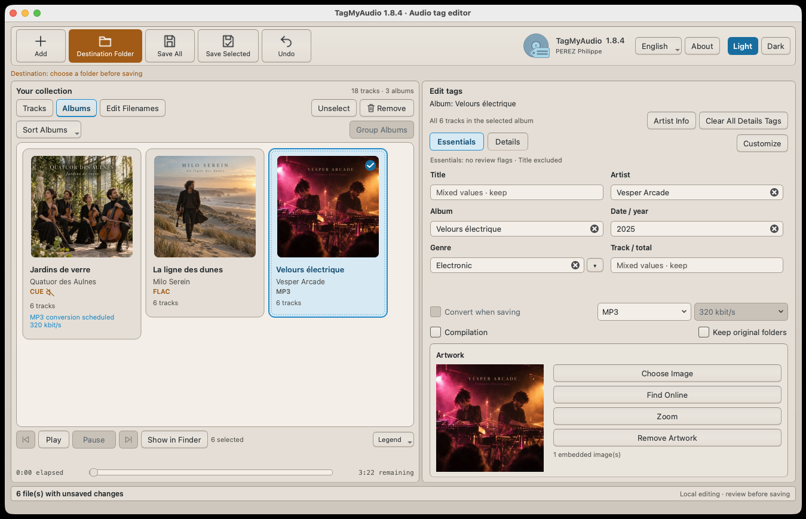

Consistent information.
Choose from 32 tag fields: titles, artists, albums, dates, genres, composers and more. Customize your essential fields and edit a track, an album or several albums at once.
Download and use TagMyAudio at no cost. It is distributed under the GNU GPL-3.0-or-later license.
The right titles, the right artwork, the right format. Organize your music and edit information for one track, one album or several albums at once.

Choose from 32 tag fields: titles, artists, albums, dates, genres, composers and more. Customize your essential fields and edit a track, an album or several albums at once.
Choose an image or find artwork online. WebP, GIF, BMP and TIFF images are automatically converted to PNG.
Set the format and quality for each selection. CUE albums can be extracted into individual tracks.
Rename one track or a whole selection of tracks using presets and advanced operations: replace text, add or remove text, and keep or remove characters. Preview the proposed names before applying them.
Combine several albums into one and choose their order. Tracks remain in sequence within each source album, preserving the musical flow.
Play tracks with the built-in player while editing tags. Pause, skip to the previous or next track, and seek within a song.
Search for an artist or band online, select the right match and browse their discography: album names, release years, genres and release types, when available. Open the artist or album source page to learn more. Information comes from MusicBrainz and Apple iTunes; browsing does not change your tags, but helps you fill them in correctly.
Switch between light and dark modes using the buttons at the top right of the application. Light mode offers a bright background; dark mode reduces the brightness of the interface. Choose whichever suits your surroundings and reading preferences. Your choice is remembered.
Clear detailed tags from your tracks while keeping essential fields. Make your collection consistent without having to clear each field separately.
Choose the output format and quality for each album or track, or apply one setting to an entire selection. Prepare, for example, some albums as MP3 and others as FLAC, AAC or Opus, then convert them when saving. Converting a lossy source to a lossless format does not restore lost audio detail.
Self-contained application for everyday use.
d389f483476b360a811e3d050fcf24bc83608aca36ce21bfdfd19e0662e3de82
DownloadSelf-contained application for everyday use.
b0006c7db6b9fa2326d9ab58b36c7f2f9c960c884e52b6df7b1d23dee508965d
DownloadSource code, build tools and license information.
eb28a004b1b25d3ce498ef9bfaf62f841936833ca868fc133e8ee25e5c684c98
DownloadInstall TagMyAudio normally for regular use.
dce03848ecc007d55ccf93ca913db7955c53a4901834614e612e5ba1cb451b38
DownloadRuns directly and can be copied to another computer.
dadded95c927978689ecef136e5e79eaadd7ded04efcc3fdd1ba2866930a6dfd
DownloadSource code, build tools and license information.
f448950cfdb41ed21fcc3262d00a62ae166c7d48b5839a650719b6891c52b8e2
DownloadRead the guide for your language and platform on a dedicated page, then download its PDF if needed. It reproduces the help included in the application.
If TagMyAudio is useful to you, support its development with an amount of your choice through PayPal.
Choose the amount securely on PayPal. No payment information is entered on this site.
Yes. Select the albums or tracks and apply your changes. Each selection can keep its own conversion settings.
No. FLAC cannot restore information lost in MP3. It preserves the decoded signal without further lossy compression.
A CUE sheet describes tracks in an associated audio file. Keep both files together. Conversion creates an audio file for each selected track.
Editing and conversion run on your computer. Searching for artwork and looking up information about artists and their albums online require an Internet connection.
No. Renaming changes the audio filename, not its Title tag. You can prepare the new names and check them before saving.
Yes. Choose to group tracks in album order, then arrange the albums. Each album’s tracks stay together in sequence, preserving the flow of classical works and multi-CD sets in particular.
Yes. The built-in player lets you listen while editing tags, pause playback, move to the previous or next track and seek within a track.
Yes. TagMyAudio automatically converts supported WebP images to PNG, whether they come from a local file or an online search. You can add them to your albums or tracks without converting them yourself first.
TagMyAudio helps you organise your music collection: edit track information, standardise filenames, add artwork and convert audio files to MP3, FLAC, WAV, AAC (M4A), ALAC (M4A), Ogg Vorbis / Opus. Work on one track, several songs or entire albums, with a built-in player to listen to your music.
MP3, FLAC, M4A and M4B — including AAC and ALAC —, Ogg Vorbis, Opus, WAV, AIFF and CUE (APE / FLAC / WAV).
Recognised extensions: .mp3, .flac, .m4a, .m4b, .alac, .ogg, .oga, .opus, .wav, .wave, .aif, .aiff, .cue.
Use Add at the top of the window, or drag files or folders into Your collection on the left. Tracks lists songs; Albums displays album cards. Selecting an album selects its tracks. Remove removes the selection from the collection without deleting files. Legend, below the collection, explains the colours and alerts.
In Albums, Sort Albums arranges cards by album name, artist, year or import order. Albums with the same name appear together without being merged. Cards and artist sorting use only the Artist field, never Album Artist. Different values are shown as Multiple artists; an empty field is shown as Unknown artist. Year uses the earliest known year; missing years stay last. Sorting keeps the selection and does not change tags or track order. Run the sort again after imports, edits or grouping when needed.
Select tracks or albums on the left, then edit their tags in the right-hand panel. Customize, beside the tag tabs, chooses the fields displayed in Essentials. The arrow in Genre opens the editable genre list. The Compilation checkbox is above the artwork. Changes are pending until saved.
Clear Details tags applies to the entire collection. Essentials, Compilation and artwork are kept. Only albums explicitly grouped in the current collection also keep Track / total and Disc / total, including pending edits, even when these fields are in Details. For other albums, these fields are cleared if they are in Details. You can still edit or clear the numbers manually. Files change only when saved; Undo reverses pending cleanup.
In Albums, select several cards and use Group Albums to bring discs together.
Group Albums: Use Move Up / Move Down to choose album order. Disc numbers are assigned in this order; existing discs within each album keep their order. Track numbers are preserved. The group name and disc numbers are prepared in the tags. Saving writes them to the files. Undo restores the previous tags and grouping.
Grouping applies to the current collection only. When files are imported again, albums are determined by the saved tags and folders, without restoring a previous grouping. Closing the application forgets the collection grouping; tags already written to files remain.
Click Edit Filenames, beside Tracks and Albums. This opens selected files, or the entire collection if nothing is selected. Select rows in this window, choose an operation or a preset in Preset, and review the proposed names. Apply to Selected keeps a batch in this window; Finished returns the prepared names to the collection. Cancel discards this window’s changes. Saving writes renamed copies and keeps the originals.
The player is below the collection: Play, Pause, previous/next arrows and the playback bar.
An orange crossed-out speaker beside CUE means these tracks cannot be played directly in the application. It appears on album cards and beside the artwork in Tracks. To listen, convert the tracks and import the extracted audio files.
In Artwork, at the bottom right, use Choose Image, drop an image, or click Find Online. For an online result, check the preview and click Use Artwork.
JPEG and PNG images are kept unchanged. WebP, GIF, BMP and TIFF images are automatically converted to PNG, without a confirmation dialog, for compatibility with audio players. This applies to local files, drag and drop, and online artwork searches, for albums, individual tracks or selected tracks. The original image file is not changed. Animated or multipage images use only the first frame or page. Artwork changes are written to audio files only when you save.
Artist Info, above the tag fields, explores an artist’s albums without changing tags.
Select tracks or albums, enable Convert when saving, then choose MP3, FLAC, WAV, AAC (M4A), ALAC (M4A), Ogg Vorbis or Opus. Each selection keeps its own format and quality when switching views. Mixed values are preserved until changed. Conversion runs when saving and preserves originals. FLAC levels change compression, not audio quality. WAV and ALAC offer 16 or 24 bits.
FLAC — compression 1, 5 or 8: all three levels preserve the same audio quality without loss. Level 1 encodes faster and generally produces larger files; 5 is the default balance between speed and size; 8 spends more time encoding to generally obtain smaller files. The level controls compression effort, not sound quality.
MP3, AAC and Opus — kbit/s: this is the audio data rate. Within the same format, a higher value generally gives better quality and larger files. These formats use lossy compression. Available values: MP3 192/256/320 (default 320), AAC 128/192/256/320 (default 256), Opus 96/128/192/256 (default 192). Opus uses a variable bitrate: the actual rate and file size depend on the music. Equal bitrates do not mean equal quality across different formats.
Ogg Vorbis — quality 3, 5, 8 or 10: this is a variable-bitrate quality scale, not a bitrate or a bit depth. A higher value generally improves quality and increases file size; 5 is the default. Vorbis uses lossy compression.
WAV and ALAC — 16 or 24 bits: this is the precision of each audio sample, not a compression level. WAV stores uncompressed PCM audio; ALAC uses lossless compression. The default is 24 bits. Choose 24 bits to retain the precision of a 24-bit source; reducing it to 16 bits reduces precision. Increasing 16 bits to 24 bits, or converting MP3/AAC to FLAC, WAV or ALAC, cannot restore details already lost in the source.
For CUE albums, conversion creates one audio file per selected track in the chosen format. With conversion disabled, saving copies the CUE sheet with its associated audio. Import extracted files to listen to them.
In the top toolbar, choose Destination Folder, then Save All or Save Selected. The Keep original folders checkbox above the artwork preserves the imported folder structure.
Select tracks or albums before changing Keep original folders. This option applies only to the selection; other items keep their own setting. A partially checked box means the selection contains different settings. New imports start with this option disabled. Save All respects each item’s setting.
Undo in the top toolbar reverses pending edits, not files already saved. Saved backups are available in Edit → History & Restore.
In Tracks within the collection on the left, Columns above the table chooses which track information appears, such as title, artist and album, and its order. Drag the boundaries between column headings to change their widths. Light, Dark and the language selector are at the top right; these preferences are remembered.
Tag editing is local. Online searches send search terms and retrieve images; audio files are not uploaded.
TagMyAudio is free software licensed under the GNU General Public License, version 3 or any later version (GPL-3.0-or-later). You may use, share and modify it under the terms of this licence. The licence and third-party notices are included with the source code.
TagMyAudio vous aide à organiser votre collection musicale : modifier les informations des morceaux, harmoniser les noms de fichiers, ajouter des pochettes et convertir des fichiers audio en MP3, FLAC, WAV, AAC (M4A), ALAC (M4A), Ogg Vorbis / Opus. Travaillez sur une piste, plusieurs morceaux ou des albums entiers, avec un lecteur intégré pour écouter votre musique.
MP3, FLAC, M4A et M4B — notamment AAC et ALAC —, Ogg Vorbis, Opus, WAV, AIFF et CUE (APE / FLAC / WAV).
Extensions reconnues : .mp3, .flac, .m4a, .m4b, .alac, .ogg, .oga, .opus, .wav, .wave, .aif, .aiff, .cue.
Utilisez Ajouter ou glissez vos fichiers et dossiers dans Votre collection. Le mode Pistes présente les morceaux dans un tableau ; le mode Albums les regroupe en cartes avec leur pochette. Sélectionner un album sélectionne ses pistes.
Retirer enlève les éléments de la collection sans supprimer les fichiers. Le bouton Légende explique les couleurs, les symboles et les alertes affichés.
En mode Albums, Trier les albums classe les cartes par nom d’album, artiste, année ou ordre d’importation. Les albums de même nom apparaissent côte à côte sans être fusionnés. Les cartes et le tri par artiste utilisent uniquement le champ Artiste, jamais Artiste de l’album. Des valeurs différentes sont signalées par Artistes différents ; un champ vide par Artiste inconnu. Le tri par année utilise la plus ancienne année connue ; les années manquantes restent à la fin. Le tri conserve la sélection et ne modifie ni les tags ni l’ordre des pistes. Relancez le tri après des imports, des modifications ou un regroupement si nécessaire.
Sélectionnez les pistes ou les albums à modifier, puis renseignez leurs informations dans le panneau de droite : titre, artiste, album, année, genre et autres champs disponibles. Personnaliser permet de choisir les champs affichés dans Essentiels. La liste des genres est modifiable. L’option Compilation permet d’identifier les compilations. Les modifications restent en attente jusqu’à leur enregistrement.
Effacer les tags Détails s’applique à toute la collection. Les champs Essentiels, Compilation et les pochettes sont conservés. Seuls les albums explicitement regroupés dans la collection en cours conservent aussi Piste / total et Disque / total, y compris les modifications en cours, même si ces champs sont dans Détails. Pour les autres albums, ces champs sont effacés s’ils sont dans Détails. Vous pouvez toujours modifier ou effacer les numéros manuellement. Les fichiers ne changent qu’à la sauvegarde ; Annuler permet de revenir sur le nettoyage en attente.
Dans Albums, sélectionnez plusieurs cartes puis utilisez Regrouper les albums pour réunir leurs pistes.
Regrouper les albums: Utilisez Monter / Descendre pour choisir l’ordre des albums. Les numéros de disque sont attribués dans cet ordre ; les disques déjà présents dans chaque album conservent leur ordre interne. Les numéros de piste sont conservés. Le nom du regroupement et les numéros de disque sont préparés dans les tags. La sauvegarde les écrit dans les fichiers. Annuler restaure les tags et le regroupement précédents.
Le regroupement s’applique uniquement à la collection en cours. Lors d’une nouvelle importation, les albums sont déterminés par les tags enregistrés et les dossiers, sans rétablir un ancien regroupement. Fermer l’application oublie le regroupement de la collection ; les tags déjà écrits dans les fichiers sont conservés.
Modifier les noms ouvre les fichiers sélectionnés, ou toute la collection si aucune sélection n’est faite. Choisissez un préréglage ou une opération, puis vérifiez les noms proposés avant de les appliquer.
Appliquer à la sélection prépare les changements dans cette fenêtre ; Terminer les transmet à la collection. Annuler abandonne les changements de la fenêtre. L’enregistrement crée les copies renommées en conservant les originaux.
Le lecteur situé sous la collection permet de lancer ou de mettre en pause la lecture, de passer au morceau précédent ou suivant et de se déplacer dans le morceau.
Un haut-parleur barré orange à côté de CUE indique que ces pistes ne peuvent pas être lues directement dans l’application. Cette icône apparaît sur les cartes des albums et près de la pochette en mode Pistes. Pour les écouter, convertissez les pistes puis importez les fichiers audio extraits.
Dans la partie Pochette, utilisez Choisir une image, glissez une image ou cliquez sur Rechercher en ligne. Vérifiez l’aperçu, puis choisissez Utiliser cette pochette.
Les images JPEG et PNG sont conservées telles quelles. Les images WebP, GIF, BMP et TIFF sont automatiquement converties en PNG, sans confirmation, pour faciliter leur affichage dans les lecteurs audio. Cela concerne les fichiers locaux, le glisser-déposer et les recherches de pochettes en ligne, pour les albums, une piste ou une sélection de pistes. Le fichier image d’origine reste inchangé. Pour les images animées ou multipages, seule la première image ou page est utilisée. Les pochettes sont écrites dans les fichiers audio uniquement lors de l’enregistrement.
Infos artiste permet également de consulter les albums d’un artiste sans modifier les tags.
Sélectionnez des pistes ou des albums, cochez Convertir à l’enregistrement, puis choisissez MP3, FLAC, WAV, AAC (M4A), ALAC (M4A), Ogg Vorbis ou Opus. Chaque sélection conserve son format et sa qualité en changeant de vue. Les valeurs mixtes sont conservées tant que vous ne les modifiez pas. La conversion se fait à l’enregistrement et préserve les originaux. Les niveaux FLAC modifient la compression, pas la qualité audio. WAV et ALAC proposent 16 ou 24 bits.
FLAC — compression 1, 5 ou 8 : les trois niveaux conservent la même qualité audio, sans perte. Le niveau 1 encode plus vite et produit généralement des fichiers plus volumineux ; 5 est le compromis par défaut entre vitesse et taille ; 8 prend davantage de temps à encoder pour obtenir généralement des fichiers plus petits. Le niveau règle l’effort de compression, pas la qualité sonore.
MP3, AAC et Opus — kbit/s : il s’agit du débit de données audio. Pour un même format, une valeur plus élevée offre généralement une meilleure qualité et des fichiers plus volumineux. Ces formats utilisent une compression avec perte. Valeurs proposées : MP3 192/256/320 (320 par défaut), AAC 128/192/256/320 (256 par défaut), Opus 96/128/192/256 (192 par défaut). Opus utilise un débit variable : le débit réel et la taille du fichier dépendent de la musique. Un même débit ne correspond pas à une qualité identique entre formats différents.
Ogg Vorbis — qualité 3, 5, 8 ou 10 : c’est une échelle de qualité à débit variable, ni un débit ni une profondeur en bits. Une valeur plus élevée améliore généralement la qualité et augmente la taille du fichier ; 5 est la valeur par défaut. Vorbis utilise une compression avec perte.
WAV et ALAC — 16 ou 24 bits : il s’agit de la précision de chaque échantillon audio, pas d’un niveau de compression. WAV stocke de l’audio PCM non compressé ; ALAC utilise une compression sans perte. La valeur par défaut est 24 bits. Choisissez 24 bits pour conserver la précision d’une source en 24 bits ; passer à 16 bits réduit cette précision. Passer de 16 à 24 bits, ou convertir du MP3/AAC en FLAC, WAV ou ALAC, ne restitue pas les détails déjà perdus dans la source.
Pour les albums CUE, la conversion crée un fichier audio par piste sélectionnée dans le format choisi. Sans conversion, la sauvegarde copie le CUE avec son audio associé. Importez les fichiers extraits pour les écouter.
Choisissez un Dossier de destination, puis cliquez sur Tout enregistrer ou Enregistrer la sélection. L’option Conserver les dossiers d’origine maintient l’organisation des dossiers importés.
Sélectionnez des pistes ou des albums avant de modifier Conserver les dossiers d’origine. Cette option s’applique uniquement à la sélection ; les autres éléments conservent leur propre réglage. Une case partiellement cochée indique des réglages différents dans la sélection. Les nouveaux éléments importés ont cette option désactivée. Tout enregistrer respecte le réglage de chaque élément.
Annuler l’action permet de revenir sur les modifications en attente ; il ne rétablit pas les fichiers déjà enregistrés. Les sauvegardes disponibles se consultent dans Édition → Historique et restauration.
Dans le mode Pistes, le bouton Colonnes, au-dessus du tableau de la collection, permet de choisir les informations visibles pour chaque morceau et leur ordre. Faites glisser les séparations entre les en-têtes pour ajuster leur largeur. Les commandes en haut à droite permettent de choisir le thème clair ou sombre et la langue de l’application. Ces préférences sont mémorisées.
La modification des tags s’effectue localement sur votre ordinateur. Les recherches en ligne transmettent les termes recherchés et récupèrent les informations ou les images demandées ; vos fichiers audio ne sont pas envoyés.
TagMyAudio est un logiciel libre sous licence publique générale GNU, version 3 ou toute version ultérieure (GPL-3.0-or-later). Vous pouvez l’utiliser, le partager et le modifier dans les conditions de cette licence. La licence et les notices des composants tiers sont fournies avec les sources.
TagMyAudio le ayuda a organizar su colección musical: editar la información de las canciones, unificar los nombres de archivo, añadir carátulas y convertir archivos de audio a MP3, FLAC, WAV, AAC (M4A), ALAC (M4A), Ogg Vorbis / Opus. Trabaje con una pista, varias canciones o álbumes completos y escuche su música con el reproductor integrado.
MP3, FLAC, M4A y M4B — incluidos AAC y ALAC —, Ogg Vorbis, Opus, WAV, AIFF y CUE (APE / FLAC / WAV).
Extensiones reconocidas: .mp3, .flac, .m4a, .m4b, .alac, .ogg, .oga, .opus, .wav, .wave, .aif, .aiff, .cue.
Usa Añadir en la parte superior o arrastra archivos o carpetas a Tu colección, a la izquierda. Pistas muestra canciones y Álbumes muestra tarjetas de álbumes. Seleccionar un álbum selecciona sus pistas. Quitar retira la selección de la colección sin borrar archivos. Leyenda, debajo de la colección, explica colores y alertas.
En Álbumes, Ordenar álbumes organiza las tarjetas por nombre, artista, año u orden de importación. Los álbumes con el mismo nombre aparecen juntos sin fusionarse. Las tarjetas y la ordenación por artista utilizan únicamente el campo Artista, nunca Artista del álbum. Los valores distintos se indican como Varios artistas; un campo vacío, como Artista desconocido. Se usa el año conocido más antiguo; los años ausentes quedan al final. Se conserva la selección sin cambiar etiquetas ni el orden de las pistas. Repita la ordenación después de importar, editar o agrupar si es necesario.
Selecciona pistas o álbumes a la izquierda y edita sus etiquetas en el panel derecho. Personalizar, junto a las pestañas de etiquetas, elige los campos de Esenciales. La flecha de Género abre la lista editable de géneros. La casilla Compilación está encima de la portada. Los cambios quedan pendientes hasta guardar.
Borrar las etiquetas de Detalles se aplica a toda la colección. Se conservan Esenciales, Compilación y carátulas. Solo los álbumes agrupados explícitamente en la colección actual conservan también Pista / total y Disco / total, incluidos los cambios pendientes, aunque estén en Detalles. En los demás álbumes, estos campos se borran si están en Detalles. Los números pueden editarse o borrarse manualmente. Los archivos solo cambian al guardar; Deshacer revierte la limpieza pendiente.
En Álbumes, selecciona varias tarjetas y usa Agrupar álbumes para reunir discos.
Agrupar álbumes: Use Subir / Bajar para elegir el orden de los álbumes. Los números de disco se asignan en ese orden; los discos existentes dentro de cada álbum conservan su orden interno. Se conservan los números de pista. El nombre del grupo y los números de disco se preparan en las etiquetas. Al guardar se escriben en los archivos. Deshacer restaura las etiquetas y la agrupación anteriores.
La agrupación solo se aplica a la colección actual. Al importar de nuevo los archivos, los álbumes se determinan a partir de las etiquetas guardadas y las carpetas, sin restaurar una agrupación anterior. Cerrar la aplicación descarta la agrupación de la colección; las etiquetas ya escritas en los archivos se conservan.
Pulsa Editar nombres de archivo, junto a Pistas y Álbumes. Se abren los archivos seleccionados, o toda la colección si no hay selección. Selecciona filas en esta ventana, elige una operación o un ajuste en Preajuste y revisa los nombres propuestos. Aplicar a la selección conserva un lote en esta ventana; Finalizar devuelve los nombres preparados a la colección. Cancelar descarta los cambios de esta ventana. Al guardar se crean copias renombradas y se conservan los originales.
El reproductor está debajo de la colección: Reproducir, Pausar, flechas anterior/siguiente y barra de reproducción.
Un altavoz naranja tachado junto a CUE indica que estas pistas no se pueden reproducir directamente en la aplicación. Aparece en las tarjetas de álbum y junto a la portada en Pistas. Para escucharlas, convierta las pistas e importe los archivos de audio extraídos.
En Carátula, abajo a la derecha, usa Elegir imagen, suelta una imagen o pulsa Buscar en línea. Para un resultado en línea, revisa la vista previa y pulsa Usar carátula.
Las imágenes JPEG y PNG se conservan sin cambios. Las imágenes WebP, GIF, BMP y TIFF se convierten automáticamente a PNG, sin confirmación, para facilitar su visualización en reproductores de audio. Esto se aplica a archivos locales, arrastrar y soltar y búsquedas de portadas en línea, para álbumes, pistas individuales o pistas seleccionadas. El archivo de imagen original no cambia. En imágenes animadas o de varias páginas solo se usa la primera imagen o página. Las portadas se escriben en los archivos de audio únicamente al guardar.
Info. del artista, encima de los campos de etiquetas, permite consultar álbumes sin modificar etiquetas.
Seleccione pistas o álbumes, active Convertir al guardar y elija MP3, FLAC, WAV, AAC (M4A), ALAC (M4A), Ogg Vorbis u Opus. Cada selección conserva su formato y calidad al cambiar de vista. Los valores mixtos se mantienen hasta que los cambie. La conversión se realiza al guardar y conserva los originales. Los niveles FLAC cambian la compresión, no la calidad del audio. WAV y ALAC ofrecen 16 o 24 bits.
FLAC — compresión 1, 5 u 8: los tres niveles conservan la misma calidad de audio sin pérdidas. El nivel 1 codifica más rápido y suele generar archivos más grandes; 5 es el equilibrio predeterminado entre velocidad y tamaño; 8 dedica más tiempo a codificar para obtener, por lo general, archivos más pequeños. El nivel controla el esfuerzo de compresión, no la calidad del sonido.
MP3, AAC y Opus — kbit/s: es la tasa de datos de audio. Dentro del mismo formato, un valor mayor suele ofrecer mejor calidad y archivos más grandes. Estos formatos comprimen con pérdidas. Valores disponibles: MP3 192/256/320 (320 por defecto), AAC 128/192/256/320 (256 por defecto), Opus 96/128/192/256 (192 por defecto). Opus usa una tasa variable: la tasa real y el tamaño dependen de la música. Una misma tasa no implica la misma calidad entre formatos diferentes.
Ogg Vorbis — calidad 3, 5, 8 o 10: es una escala de calidad con tasa variable, no una tasa de bits ni una profundidad de bits. Un valor mayor suele mejorar la calidad y aumentar el tamaño; 5 es el valor predeterminado. Vorbis comprime con pérdidas.
WAV y ALAC — 16 o 24 bits: es la precisión de cada muestra de audio, no un nivel de compresión. WAV almacena audio PCM sin comprimir; ALAC comprime sin pérdidas. El valor predeterminado es 24 bits. Elija 24 bits para conservar la precisión de una fuente de 24 bits; reducirla a 16 bits reduce la precisión. Pasar de 16 a 24 bits, o convertir MP3/AAC a FLAC, WAV o ALAC, no recupera los detalles ya perdidos en la fuente.
En los álbumes CUE, la conversión crea un archivo de audio por pista seleccionada en el formato elegido. Sin conversión, se copia el CUE junto con su audio. Importe los archivos extraídos para escucharlos.
En la barra superior, elige Carpeta de destino y después Guardar todo o Guardar selección. La casilla Conservar carpetas originales, encima de la portada, conserva la estructura importada.
Seleccione pistas o álbumes antes de cambiar Conservar carpetas originales. Esta opción solo se aplica a la selección; los demás elementos conservan su ajuste. Una casilla parcialmente marcada indica ajustes distintos en la selección. Los nuevos elementos importados tienen esta opción desactivada. Guardar todo respeta el ajuste de cada elemento.
Deshacer, en la barra superior, revierte cambios pendientes, no archivos ya guardados. Las copias de seguridad están en Editar → Historial y restauración.
En Pistas de la colección, a la izquierda, el botón Columnas sobre la tabla permite elegir qué información aparece para cada pista, como título, artista y álbum, y su orden. Arrastra las separaciones entre las cabeceras para ajustar el ancho. Claro, Oscuro y el selector de idioma están arriba a la derecha; estas preferencias se recuerdan.
Las etiquetas se editan localmente. Las búsquedas en línea envían términos de búsqueda y obtienen imágenes; no se suben archivos de audio.
TagMyAudio es software libre bajo la Licencia Pública General de GNU, versión 3 o cualquier versión posterior (GPL-3.0-or-later). Puede utilizarlo, compartirlo y modificarlo según los términos de esta licencia. La licencia y los avisos de terceros se incluyen con el código fuente.
TagMyAudio aiuta a organizzare la propria collezione musicale: modificare le informazioni dei brani, uniformare i nomi dei file, aggiungere copertine e convertire i file audio in MP3, FLAC, WAV, AAC (M4A), ALAC (M4A), Ogg Vorbis / Opus. È possibile lavorare su una traccia, più brani o interi album e ascoltare la musica con il lettore integrato.
MP3, FLAC, M4A e M4B — inclusi AAC e ALAC —, Ogg Vorbis, Opus, WAV, AIFF e CUE (APE / FLAC / WAV).
Estensioni riconosciute: .mp3, .flac, .m4a, .m4b, .alac, .ogg, .oga, .opus, .wav, .wave, .aif, .aiff, .cue.
Usa Aggiungi in alto oppure trascina file o cartelle in La tua raccolta, a sinistra. Tracce mostra i brani e Album le schede degli album. Selezionare un album seleziona i suoi brani. Rimuovi toglie la selezione dalla raccolta senza eliminare i file. Legenda, sotto la raccolta, spiega colori e avvisi.
In Album, Ordina album dispone le schede per nome, artista, anno o ordine di importazione. Gli album con lo stesso nome appaiono vicini senza essere uniti. Le schede e l’ordinamento per artista usano solo il campo Artista, mai Artista dell’album. Valori diversi sono indicati come Artisti diversi; un campo vuoto come Artista sconosciuto. Si usa l’anno noto più vecchio; gli anni mancanti restano in fondo. La selezione viene mantenuta, senza modificare tag o ordine delle tracce. Ripetere l’ordinamento dopo importazioni, modifiche o raggruppamenti se necessario.
Seleziona brani o album a sinistra e modifica i tag nel pannello destro. Personalizza, accanto alle schede dei tag, sceglie i campi di Essenziali. La freccia di Genere apre l’elenco modificabile dei generi. La casella Compilazione è sopra la copertina. Le modifiche restano in sospeso fino al salvataggio.
Cancella tag Dettagli si applica all’intera raccolta. Conserva Essenziali, Compilation e copertine. Solo gli album raggruppati esplicitamente nella raccolta corrente conservano anche Traccia / totale e Disco / totale, incluse le modifiche in sospeso, anche se sono nei Dettagli. Per gli altri album, questi campi vengono cancellati se sono nei Dettagli. I numeri possono essere modificati o cancellati manualmente. I file cambiano solo al salvataggio; Annulla ripristina i valori prima della pulizia in sospeso.
In Album, seleziona più schede e usa Raggruppa album per riunire i dischi.
Raggruppa album: Usare Sposta su / Sposta giù per scegliere l’ordine degli album. I numeri di disco seguono questo ordine; i dischi già presenti in ogni album mantengono il loro ordine interno. I numeri di traccia vengono conservati. Il nome del gruppo e i numeri di disco vengono preparati nei tag. Il salvataggio li scrive nei file. Annulla ripristina i tag e il raggruppamento precedenti.
Il raggruppamento si applica solo alla raccolta corrente. Importando nuovamente i file, gli album vengono determinati dai tag salvati e dalle cartelle, senza ripristinare un raggruppamento precedente. Chiudendo l’applicazione si dimentica il raggruppamento della raccolta; i tag già scritti nei file vengono conservati.
Fai clic su Modifica nomi file, accanto a Tracce e Album. Si aprono i file selezionati oppure tutta la raccolta se non c’è una selezione. Seleziona righe in questa finestra, scegli un’operazione o un modello in Preimpostazione e controlla i nomi proposti. Applica alla selezione conserva un gruppo in questa finestra; Fine trasferisce i nomi preparati alla raccolta. Annulla scarta le modifiche di questa finestra. Il salvataggio crea copie rinominate e conserva gli originali.
Il lettore è sotto la raccolta: Riproduci, Pausa, frecce precedente/successivo e barra di riproduzione.
Un altoparlante arancione barrato accanto a CUE indica che queste tracce non possono essere riprodotte direttamente nell’applicazione. Appare sulle schede degli album e accanto alla copertina in Tracce. Per ascoltarle, convertite le tracce e importate i file audio estratti.
In Copertina, in basso a destra, usa Scegli immagine, trascina un’immagine o fai clic su Cerca online. Per un risultato online, controlla l’anteprima e fai clic su Usa copertina.
Le immagini JPEG e PNG vengono mantenute inalterate. Le immagini WebP, GIF, BMP e TIFF vengono convertite automaticamente in PNG, senza conferma, per facilitarne la visualizzazione nei lettori audio. Questo vale per file locali, trascinamento e ricerche di copertine online, per album, singole tracce o tracce selezionate. Il file immagine originale non cambia. Per le immagini animate o multipagina viene usata solo la prima immagine o pagina. Le copertine vengono scritte nei file audio solo al salvataggio.
Info artista, sopra i campi dei tag, permette di consultare gli album senza modificare i tag.
Selezionare tracce o album, attivare Converti al salvataggio e scegliere MP3, FLAC, WAV, AAC (M4A), ALAC (M4A), Ogg Vorbis o Opus. Ogni selezione mantiene formato e qualità cambiando vista. I valori misti rimangono invariati finché non vengono modificati. La conversione avviene al salvataggio e conserva gli originali. I livelli FLAC cambiano la compressione, non la qualità audio. WAV e ALAC offrono 16 o 24 bit.
FLAC — compressione 1, 5 o 8: tutti e tre i livelli mantengono la stessa qualità audio senza perdita. Il livello 1 codifica più velocemente e genera solitamente file più grandi; 5 è il compromesso predefinito tra velocità e dimensioni; 8 impiega più tempo per ottenere generalmente file più piccoli. Il livello regola lo sforzo di compressione, non la qualità sonora.
MP3, AAC e Opus — kbit/s: è il flusso di dati audio. A parità di formato, un valore maggiore offre generalmente una qualità migliore e file più grandi. Questi formati usano una compressione con perdita. Valori disponibili: MP3 192/256/320 (predefinito 320), AAC 128/192/256/320 (predefinito 256), Opus 96/128/192/256 (predefinito 192). Opus usa un bitrate variabile: il valore effettivo e le dimensioni dipendono dalla musica. Lo stesso bitrate non indica la stessa qualità tra formati diversi.
Ogg Vorbis — qualità 3, 5, 8 o 10: è una scala di qualità a bitrate variabile, non un bitrate né una profondità in bit. Un valore maggiore migliora generalmente la qualità e aumenta le dimensioni; 5 è il valore predefinito. Vorbis usa una compressione con perdita.
WAV e ALAC — 16 o 24 bit: è la precisione di ogni campione audio, non un livello di compressione. WAV memorizza audio PCM non compresso; ALAC usa una compressione senza perdita. Il valore predefinito è 24 bit. Scegliere 24 bit per conservare la precisione di una sorgente a 24 bit; ridurla a 16 bit ne riduce la precisione. Passare da 16 a 24 bit, o convertire MP3/AAC in FLAC, WAV o ALAC, non ripristina i dettagli già persi nella sorgente.
Per gli album CUE, la conversione crea un file audio per ogni traccia selezionata nel formato scelto. Senza conversione, il salvataggio copia il CUE con il relativo audio. Importare i file estratti per ascoltarli.
Nella barra superiore, scegli Cartella di destinazione, poi Salva tutto o Salva selezione. La casella Mantieni le cartelle originali, sopra la copertina, conserva la struttura importata.
Selezionate tracce o album prima di modificare Mantieni le cartelle originali. L’opzione si applica solo alla selezione; gli altri elementi mantengono la propria impostazione. Una casella parzialmente selezionata indica impostazioni diverse nella selezione. Per i nuovi elementi importati l’opzione è disattivata. Salva tutto rispetta l’impostazione di ogni elemento.
Annulla, nella barra superiore, annulla le modifiche in sospeso, non i file già salvati. I backup sono disponibili in Modifica → Cronologia e ripristino.
In Tracce della raccolta, a sinistra, il pulsante Colonne sopra la tabella sceglie le informazioni mostrate per ogni brano, come titolo, artista e album, e il loro ordine. Trascina i separatori tra le intestazioni per regolare la larghezza. Chiaro, Scuro e il selettore della lingua sono in alto a destra; queste preferenze vengono ricordate.
I tag vengono modificati localmente. Le ricerche online inviano termini di ricerca e recuperano immagini; i file audio non vengono caricati.
TagMyAudio è software libero distribuito secondo la GNU General Public License, versione 3 o qualsiasi versione successiva (GPL-3.0-or-later). È possibile usarlo, condividerlo e modificarlo nel rispetto di questa licenza. La licenza e gli avvisi relativi ai componenti di terze parti sono inclusi nel codice sorgente.
O TagMyAudio ajuda a organizar a sua coleção musical: editar as informações das faixas, uniformizar os nomes dos ficheiros, adicionar capas e converter ficheiros de áudio para MP3, FLAC, WAV, AAC (M4A), ALAC (M4A), Ogg Vorbis / Opus. Trabalhe numa faixa, em várias músicas ou em álbuns completos e ouça a sua música com o leitor integrado.
MP3, FLAC, M4A e M4B — incluindo AAC e ALAC —, Ogg Vorbis, Opus, WAV, AIFF e CUE (APE / FLAC / WAV).
Extensões reconhecidas: .mp3, .flac, .m4a, .m4b, .alac, .ogg, .oga, .opus, .wav, .wave, .aif, .aiff, .cue.
Use Adicionar no topo ou arraste ficheiros ou pastas para Sua coleção, à esquerda. Faixas mostra as músicas e Álbuns os cartões dos álbuns. Selecionar um álbum seleciona as suas faixas. Remover retira a seleção da coleção sem eliminar ficheiros. Legenda, abaixo da coleção, explica as cores e os alertas.
Em Álbuns, Ordenar álbuns organiza os cartões por nome, artista, ano ou ordem de importação. Álbuns com o mesmo nome aparecem juntos sem serem fundidos. Os cartões e a ordenação por artista usam apenas o campo Artista, nunca Artista do álbum. Valores diferentes aparecem como Artistas diferentes; um campo vazio como Artista desconhecido. Usa-se o ano conhecido mais antigo; os anos em falta ficam no fim. A seleção é mantida sem alterar etiquetas ou a ordem das faixas. Repita a ordenação após importações, edições ou agrupamentos, se necessário.
Selecione faixas ou álbuns à esquerda e edite as etiquetas no painel direito. Personalizar, junto aos separadores de etiquetas, escolhe os campos de Essenciais. A seta de Gênero abre a lista editável de géneros. A caixa Compilação está acima da capa. As alterações ficam pendentes até guardar.
Limpar etiquetas de Detalhes aplica-se a toda a coleção. Preserva Essenciais, Compilação e capas. Apenas os álbuns agrupados explicitamente na coleção atual preservam também Faixa / total e Disco / total, incluindo alterações pendentes, mesmo que estejam em Detalhes. Nos outros álbuns, estes campos são apagados se estiverem em Detalhes. Os números podem ser editados ou apagados manualmente. Os ficheiros só mudam ao guardar; Desfazer reverte a limpeza pendente.
Em Álbuns, selecione vários cartões e use Agrupar álbuns para reunir discos.
Agrupar álbuns: Use Mover para cima / Mover para baixo para escolher a ordem dos álbuns. Os números de disco são atribuídos nessa ordem; os discos existentes em cada álbum mantêm a sua ordem interna. Os números de faixa são preservados. O nome do grupo e os números de disco são preparados nas etiquetas. Ao guardar, são escritos nos ficheiros. Desfazer restaura as etiquetas e o agrupamento anteriores.
O agrupamento aplica-se apenas à coleção atual. Ao importar os ficheiros novamente, os álbuns são determinados pelas etiquetas guardadas e pelas pastas, sem restaurar um agrupamento anterior. Fechar a aplicação descarta o agrupamento da coleção; as etiquetas já escritas nos ficheiros são preservadas.
Clique em Editar nomes de arquivo, junto a Faixas e Álbuns. Abre os ficheiros selecionados, ou toda a coleção se nada estiver selecionado. Selecione linhas nesta janela, escolha uma operação ou uma opção em Predefinição e reveja os nomes propostos. Aplicar à seleção mantém um lote nesta janela; Concluir transfere os nomes preparados para a coleção. Cancelar descarta as alterações desta janela. Ao guardar são criadas cópias com os novos nomes e os originais são mantidos.
O leitor está abaixo da coleção: Reproduzir, Pausar, setas anterior/seguinte e barra de reprodução.
Um altifalante laranja riscado junto a CUE indica que estas faixas não podem ser reproduzidas diretamente na aplicação. Aparece nos cartões dos álbuns e junto à capa em Faixas. Para as ouvir, converta as faixas e importe os ficheiros de áudio extraídos.
Em Capa, em baixo à direita, use Escolher imagem, arraste uma imagem ou clique em Buscar online. Para um resultado online, verifique a pré-visualização e clique em Usar capa.
As imagens JPEG e PNG são mantidas sem alterações. As imagens WebP, GIF, BMP e TIFF são convertidas automaticamente para PNG, sem confirmação, para facilitar a apresentação nos leitores de áudio. Isto aplica-se a ficheiros locais, arrastar e largar e pesquisas de capas online, para álbuns, faixas individuais ou faixas selecionadas. O ficheiro de imagem original não é alterado. Para imagens animadas ou com várias páginas, apenas a primeira imagem ou página é utilizada. As capas só são gravadas nos ficheiros de áudio ao guardar.
Info. do artista, acima dos campos de etiquetas, permite consultar álbuns sem alterar etiquetas.
Selecione faixas ou álbuns, ative Converter ao guardar e escolha MP3, FLAC, WAV, AAC (M4A), ALAC (M4A), Ogg Vorbis ou Opus. Cada seleção mantém o formato e a qualidade ao mudar de vista. Os valores mistos são mantidos até serem alterados. A conversão ocorre ao guardar e preserva os originais. Os níveis FLAC alteram a compressão, não a qualidade do áudio. WAV e ALAC oferecem 16 ou 24 bits.
FLAC — compressão 1, 5 ou 8: os três níveis preservam a mesma qualidade de áudio sem perdas. O nível 1 codifica mais depressa e geralmente cria ficheiros maiores; 5 é o equilíbrio predefinido entre velocidade e tamanho; 8 demora mais a codificar para geralmente obter ficheiros menores. O nível controla o esforço de compressão, não a qualidade sonora.
MP3, AAC e Opus — kbit/s: é a taxa de dados de áudio. No mesmo formato, um valor superior oferece geralmente melhor qualidade e ficheiros maiores. Estes formatos usam compressão com perdas. Valores disponíveis: MP3 192/256/320 (predefinido 320), AAC 128/192/256/320 (predefinido 256), Opus 96/128/192/256 (predefinido 192). Opus usa uma taxa variável: a taxa real e o tamanho dependem da música. Taxas iguais não significam qualidade igual entre formatos diferentes.
Ogg Vorbis — qualidade 3, 5, 8 ou 10: é uma escala de qualidade com taxa variável, não uma taxa de bits nem uma profundidade de bits. Um valor superior melhora geralmente a qualidade e aumenta o tamanho; 5 é o valor predefinido. Vorbis usa compressão com perdas.
WAV e ALAC — 16 ou 24 bits: é a precisão de cada amostra de áudio, não um nível de compressão. WAV guarda áudio PCM não comprimido; ALAC usa compressão sem perdas. O valor predefinido é 24 bits. Escolha 24 bits para preservar a precisão de uma fonte de 24 bits; reduzi-la para 16 bits reduz a precisão. Passar de 16 para 24 bits, ou converter MP3/AAC para FLAC, WAV ou ALAC, não recupera detalhes já perdidos na fonte.
Nos álbuns CUE, a conversão cria um ficheiro de áudio por faixa selecionada no formato escolhido. Sem conversão, a gravação copia o CUE com o áudio associado. Importe os ficheiros extraídos para os ouvir.
Na barra superior, escolha Pasta de destino, depois Salvar tudo ou Salvar seleção. A caixa Manter pastas originais, acima da capa, preserva a estrutura importada.
Selecione faixas ou álbuns antes de alterar Manter pastas originais. Esta opção aplica-se apenas à seleção; os outros elementos mantêm a sua configuração. Uma caixa parcialmente marcada indica configurações diferentes na seleção. Os novos elementos importados têm esta opção desativada. Salvar tudo respeita a configuração de cada elemento.
Desfazer, na barra superior, reverte alterações pendentes, não ficheiros já guardados. As cópias de segurança estão em Editar → Histórico e restauração.
Em Faixas da coleção, à esquerda, o botão Colunas acima da tabela escolhe as informações mostradas por faixa, como título, artista e álbum, e a sua ordem. Arraste os separadores entre os cabeçalhos para ajustar a largura. Claro, Escuro e o seletor de idioma estão no topo à direita; estas preferências são memorizadas.
As etiquetas são editadas localmente. As pesquisas online enviam termos de pesquisa e obtêm imagens; não são enviados ficheiros de áudio.
O TagMyAudio é software livre sob a Licença Pública Geral GNU, versão 3 ou qualquer versão posterior (GPL-3.0-or-later). Pode utilizá-lo, partilhá-lo e modificá-lo de acordo com os termos desta licença. A licença e os avisos de componentes de terceiros são fornecidos com o código-fonte.
TagMyAudio помогает упорядочить музыкальную коллекцию: редактировать сведения о композициях, приводить имена файлов к единому виду, добавлять обложки и преобразовывать аудиофайлы в MP3, FLAC, WAV, AAC (M4A), ALAC (M4A), Ogg Vorbis / Opus. Работайте с отдельной дорожкой, несколькими композициями или целыми альбомами и слушайте музыку во встроенном проигрывателе.
MP3, FLAC, M4A и M4B — в том числе AAC и ALAC —, Ogg Vorbis, Opus, WAV, AIFF и CUE (APE / FLAC / WAV).
Распознаваемые расширения: .mp3, .flac, .m4a, .m4b, .alac, .ogg, .oga, .opus, .wav, .wave, .aif, .aiff, .cue.
Используйте Добавить вверху окна или перетащите файлы и папки в Ваша коллекция слева. Треки показывает песни, а Альбомы — карточки альбомов. Выбор альбома выбирает его треки. Убрать убирает выбранное из коллекции, не удаляя файлы. Обозначения под коллекцией объясняет цвета и предупреждения.
В режиме альбомов кнопка «Сортировать альбомы» упорядочивает карточки по названию, исполнителю, году или порядку импорта. Альбомы с одинаковым названием располагаются рядом, но не объединяются. Карточки и сортировка по исполнителю используют только поле Исполнитель, а не Исполнитель альбома. Различающиеся значения обозначаются как Разные исполнители, пустое поле — как Неизвестный исполнитель. Для года берётся самый ранний известный год; альбомы без года остаются в конце. Выделение сохраняется, теги и порядок дорожек не меняются. При необходимости повторите сортировку после импорта, редактирования или группировки.
Выберите треки или альбомы слева и измените теги на правой панели. Настроить рядом с вкладками тегов выбирает поля для Основные. Стрелка поля Жанр открывает редактируемый список жанров. Флажок Сборник находится над обложкой. Изменения ожидают сохранения.
Очистка тегов «Подробности» применяется ко всей коллекции. Основные поля, сборник и обложки сохраняются. Только альбомы, явно объединённые в текущей коллекции, также сохраняют номера и общее число дорожек и дисков, включая несохранённые правки, даже если эти поля находятся в разделе «Подробности». У остальных альбомов эти поля очищаются, если находятся в разделе «Подробности». Номера можно изменить или удалить вручную. Файлы меняются только при сохранении; отмена возвращает значения до намеченной очистки.
В Альбомы выберите несколько карточек и нажмите Объединить альбомы, чтобы объединить диски.
Объединить альбомы: Используйте Вверх / Вниз для выбора порядка альбомов. Номера дисков назначаются в этом порядке; диски внутри каждого альбома сохраняют свой внутренний порядок. Номера дорожек сохраняются. Название группы и номера дисков подготавливаются в тегах. Сохранение записывает их в файлы. Отмена восстанавливает прежние теги и группировку.
Группировка действует только в текущей коллекции. При повторном импорте альбомы определяются по сохранённым тегам и папкам, без восстановления прежней группировки. При закрытии приложения группировка коллекции забывается; теги, уже записанные в файлы, сохраняются.
Нажмите Изменить имена файлов рядом с Треки и Альбомы. Откроются выбранные файлы, а без выбора — вся коллекция. Выберите строки в этом окне, операцию или вариант в Пресет и проверьте предлагаемые имена. Применить к выбранным оставляет пакет в этом окне; Готово передаёт подготовленные имена в коллекцию. Отмена отбрасывает изменения этого окна. При сохранении создаются переименованные копии; оригиналы остаются.
Проигрыватель находится под коллекцией: Воспроизвести, Пауза, стрелки назад/вперёд и шкала воспроизведения.
Оранжевый перечёркнутый динамик рядом с CUE означает, что эти дорожки нельзя воспроизвести непосредственно в приложении. Он отображается на карточках альбомов и рядом с обложкой в режиме дорожек. Для прослушивания преобразуйте дорожки и импортируйте извлечённые аудиофайлы.
В Обложка справа внизу используйте Выбрать изображение, перетащите изображение или нажмите Найти в интернете. Для результата из Интернета проверьте просмотр и нажмите Использовать обложку.
Изображения JPEG и PNG сохраняются без изменений. WebP, GIF, BMP и TIFF автоматически преобразуются в PNG без подтверждения для совместимости с аудиоплеерами. Это относится к локальным файлам, перетаскиванию и поиску обложек в интернете для альбомов, отдельных или выбранных дорожек. Исходный файл изображения не изменяется. Для анимированных или многостраничных изображений используется только первый кадр или страница. Обложки записываются в аудиофайлы только при сохранении.
Об исполнителе над полями тегов позволяет просматривать альбомы без изменения тегов.
Выберите дорожки или альбомы, включите Конвертировать при сохранении и выберите MP3, FLAC, WAV, AAC (M4A), ALAC (M4A), Ogg Vorbis или Opus. Формат и качество каждой выбранной группы сохраняются при смене вида. Различающиеся значения сохраняются до изменения. Конвертация выполняется при сохранении, оригиналы остаются нетронутыми. Уровни FLAC меняют сжатие, а не качество звука. WAV и ALAC предлагают 16 или 24 бита.
FLAC — сжатие 1, 5 или 8: все три уровня сохраняют одинаковое качество звука без потерь. Уровень 1 кодирует быстрее и обычно создаёт файлы большего размера; 5 — баланс скорости и размера по умолчанию; 8 тратит больше времени на кодирование, обычно получая файлы меньшего размера. Уровень задаёт усилия сжатия, а не качество звука.
MP3, AAC и Opus — кбит/с: это скорость потока аудиоданных. В одном формате более высокое значение обычно повышает качество и размер файла. Эти форматы используют сжатие с потерями. Значения: MP3 192/256/320 (по умолчанию 320), AAC 128/192/256/320 (по умолчанию 256), Opus 96/128/192/256 (по умолчанию 192). Opus использует переменный битрейт: фактический поток и размер зависят от музыки. Одинаковый битрейт не означает одинаковое качество в разных форматах.
Ogg Vorbis — качество 3, 5, 8 или 10: это шкала качества с переменным битрейтом, а не битрейт или разрядность. Более высокое значение обычно улучшает качество и увеличивает размер; по умолчанию — 5. Vorbis использует сжатие с потерями.
WAV и ALAC — 16 или 24 бита: это точность каждого аудиоотсчёта, а не уровень сжатия. WAV хранит несжатый звук PCM; ALAC использует сжатие без потерь. По умолчанию — 24 бита. Выберите 24 бита для сохранения точности 24-битного источника; переход к 16 битам снижает точность. Переход с 16 на 24 бита или преобразование MP3/AAC в FLAC, WAV или ALAC не восстанавливает детали, уже утраченные в источнике.
Для альбомов CUE конвертация создаёт отдельный аудиофайл для каждой выбранной дорожки в выбранном формате. Без конвертации копируется CUE вместе с аудио. Импортируйте извлечённые файлы для прослушивания.
На верхней панели выберите Папка назначения, затем Сохранить всё или Сохранить выбранное. Флажок Сохранять исходные папки над обложкой сохраняет импортированную структуру папок.
Выберите дорожки или альбомы перед изменением параметра Сохранять исходные папки. Он применяется только к выбранным элементам; остальные сохраняют свои настройки. Частично установленный флажок означает, что настройки выбранных элементов различаются. Для новых импортированных элементов параметр отключён. Сохранить всё учитывает настройку каждого элемента.
Отменить действие на верхней панели отменяет ожидающие изменения, а не уже сохранённые файлы. Резервные копии доступны в Правка → История и восстановление.
В режиме Треки коллекции слева кнопка Столбцы над таблицей выбирает сведения о треках, например название, исполнителя и альбом, и их порядок. Перетаскивайте границы заголовков, чтобы менять ширину столбцов. Светлая, Тёмная и выбор языка находятся справа вверху; настройки запоминаются.
Теги редактируются локально. Интернет-поиск отправляет поисковые запросы и получает изображения; аудиофайлы не отправляются.
TagMyAudio — свободное программное обеспечение под лицензией GNU General Public License версии 3 или любой более поздней версии (GPL-3.0-or-later). Его можно использовать, распространять и изменять в соответствии с условиями этой лицензии. Лицензия и уведомления о сторонних компонентах включены в исходный код.
TagMyAudioは、楽曲情報の編集、ファイル名の統一、ジャケット画像の追加、音声ファイルのMP3, FLAC, WAV, AAC (M4A), ALAC (M4A), Ogg Vorbis / Opus変換を通じて、音楽コレクションの整理を支援します。1曲、複数の曲、アルバム全体をまとめて操作でき、内蔵プレーヤーで音楽を聴くこともできます。
MP3、FLAC、M4AおよびM4B（AAC・ALACを含む）、Ogg Vorbis、Opus、WAV、AIFF、CUE (APE / FLAC / WAV).
認識する拡張子： .mp3, .flac, .m4a, .m4b, .alac, .ogg, .oga, .opus, .wav, .wave, .aif, .aiff, .cue.
ウィンドウ上部の追加を使うか、ファイルやフォルダーを左側のコレクションへドラッグします。トラックは曲の一覧、アルバムはアルバムのカードを表示します。アルバムを選ぶとそのトラックが選択されます。除去はファイルを削除せずに選択項目をコレクションから除きます。下の凡例で色や警告の意味を確認できます。
アルバム表示では、並べ替えボタンで名前、アーティスト、年、読み込み順にカードを並べ替えられます。同名のアルバムは隣接しますが、結合されません。カードとアーティスト順の並べ替えには「アーティスト」だけを使用し、「アルバムアーティスト」は使用しません。値が異なる場合は「異なるアーティスト」、空欄の場合は「不明なアーティスト」と表示します。年は判明している最も古い年を使用し、不明なものは末尾に置きます。選択状態を維持し、タグや曲順は変更しません。読み込み、編集、グループ化の後は必要に応じて再度並べ替えてください。
左側でトラックやアルバムを選び、右側のパネルでタグを編集します。 タグのタブの横にあるカスタマイズで基本項目の項目を選べます。 ジャンルの矢印で編集可能なジャンル一覧が開きます。 コンピレーションのチェック欄はアートワークの上です。 変更は保存待ちの状態になります。
詳細タグの消去はコレクション全体に適用されます。基本項目、コンピレーション、アートワークは保持されます。現在のコレクションで明示的にグループ化したアルバムのみ、トラック番号／総数とディスク番号／総数も未保存の変更を含めて保持されます。これらの項目が詳細にあっても保持されます。他のアルバムでは、詳細にある番号項目は消去されます。番号は手動で編集・消去できます。ファイルは保存時にのみ変更され、「元に戻す」で未保存の消去を取り消せます。
アルバムで複数のカードを選び、アルバムをまとめるでディスクをまとめられます。
アルバムをまとめる: 「上へ」「下へ」でアルバムの順序を選びます。この順序でディスク番号が割り当てられます。各アルバムに複数のディスクがある場合、その内部の順序は維持されます。トラック番号は変更しません。 グループ名とディスク番号をタグに設定する準備をします。保存するとファイルに書き込まれます。「元に戻す」で以前のタグとグループ分けに戻せます。
グループ分けは現在のコレクションにのみ適用されます。ファイルを再び読み込むと、保存済みのタグとフォルダーからアルバムが決まり、以前のグループ分けは復元されません。アプリを閉じるとコレクションのグループ分けは忘れられますが、ファイルに書き込まれたタグは保持されます。
トラックとアルバムの横にあるファイル名を編集をクリックします。選択したファイルが開き、未選択ならコレクション全体が開きます。このウィンドウ内で行を選び、操作やプリセットを選んで新しい名前を確認します。選択項目に適用は結果をこのウィンドウに保持し、完了は準備した名前をコレクションへ渡します。キャンセルはこのウィンドウの変更を破棄します。保存時に改名したコピーを作り、元のファイルは残します。
プレーヤーはコレクションの下にあり、再生、一時停止、前後の矢印と再生バーを使えます。
CUEの横のオレンジ色の斜線付きスピーカーは、その曲をアプリ内で直接再生できないことを示します。アルバムカードと曲表示のジャケット画像の横に表示されます。聴くには曲を変換し、抽出された音声ファイルを読み込んでください。
右下のアートワークでは画像を選択、画像のドラッグ、オンライン検索を利用できます。 オンラインの結果はプレビューを確認してアートワークを使用をクリックします。
JPEGとPNG画像はそのまま保持されます。WebP、GIF、BMP、TIFF画像は、音楽プレーヤーとの互換性のため、確認なしで自動的にPNGに変換されます。アルバム、個別の曲、選択した曲へのローカルファイルの追加、ドラッグ＆ドロップ、オンライン画像検索に適用されます。元の画像ファイルは変更されません。アニメーションや複数ページの画像では、最初のフレームまたはページだけを使用します。ジャケット画像が音声ファイルに書き込まれるのは保存時のみです。
タグ欄の上のアーティスト情報ではタグを変更せずにアルバムを調べられます。
トラックまたはアルバムを選択し、保存時に変換 を有効にして、MP3、FLAC、WAV、AAC (M4A)、ALAC (M4A)、Ogg Vorbis、Opusから選びます。表示を切り替えても、各選択の形式と品質は保持されます。異なる設定は変更するまで保持されます。保存時に変換され、元ファイルは保持されます。FLACのレベルは音質ではなく圧縮率を変更します。WAVとALACでは16または24ビットを選べます。
FLAC — 圧縮レベル 1、5、8：どのレベルでも同じ音質を損失なく保持します。1 はエンコードが速く、通常ファイルは大きめになります。5 は速度とサイズのバランスを取る既定値です。8 はエンコードに時間をかけ、通常はより小さなファイルを作ります。このレベルは圧縮処理の強さであり、音質ではありません。
MP3、AAC、Opus — kbit/s：音声データのビットレートです。同じ形式では、値を大きくすると通常は音質が向上し、ファイルも大きくなります。これらは非可逆圧縮形式です。選択値：MP3 192/256/320（既定 320）、AAC 128/192/256/320（既定 256）、Opus 96/128/192/256（既定 192）。Opus は可変ビットレートのため、実際のレートとサイズは音楽により変わります。異なる形式では、同じビットレートでも同じ音質にはなりません。
Ogg Vorbis — 品質 3、5、8、10：可変ビットレートの品質尺度であり、ビットレートやビット深度ではありません。値が大きいほど通常は音質が向上し、サイズも増えます。既定値は 5 です。Vorbis は非可逆圧縮です。
WAV、ALAC — 16 または 24 ビット：各音声サンプルの精度であり、圧縮レベルではありません。WAV は非圧縮 PCM、ALAC は可逆圧縮です。既定値は 24 ビットです。24 ビットの音源の精度を保つには 24 ビットを選びます。16 ビットに下げると精度が低下します。16 から 24 ビットへの変更や、MP3/AAC から FLAC、WAV、ALAC への変換で、音源ですでに失われた情報は復元できません。
CUEアルバムを変換すると、選択したトラックごとに指定形式の音声ファイルが作成されます。変換を無効にすると、CUEと対応する音声がコピーされます。再生するには抽出したファイルをインポートしてください。
上部のツールバーで保存先フォルダーを選び、すべて保存または選択項目を保存を使います。 アートワークの上の元のフォルダー構成を保持は読み込んだフォルダー構造を維持します。
元のフォルダー構成を保持を変更する前に、トラックまたはアルバムを選択してください。この設定は選択した項目のみに適用され、他の項目の設定は変わりません。チェックボックスが部分的に選択されている場合は、選択項目の設定が異なります。新しく読み込んだ項目では、この設定は無効です。すべて保存では各項目の設定が適用されます。
上部の元に戻すは未保存の変更が対象で、保存済みファイルには適用されません。 バックアップは編集 → 履歴と復元で確認できます。
左のコレクションをトラックにすると、表の上の列で曲名、アーティスト、アルバムなどの表示項目と順序を選べます。 列見出しの境界をドラッグして幅を調整します。 ライト、ダークと言語選択は右上にあり、設定は記憶されます。
タグはローカルで編集します。 オンライン検索では検索語を送信して画像を取得しますが、音声ファイルはアップロードしません。
TagMyAudioは、GNU General Public Licenseのバージョン3またはそれ以降のバージョン（GPL-3.0-or-later）に基づく自由ソフトウェアです。このライセンスの条件に従って、使用、共有、改変ができます。ライセンスおよび第三者コンポーネントに関する通知はソースコードに同梱されています。
TagMyAudio आपके संगीत संग्रह को व्यवस्थित करने में मदद करता है: गानों की जानकारी संपादित करें, फ़ाइलों के नाम एक जैसे ढंग से रखें, कवर चित्र जोड़ें और ऑडियो फ़ाइलों को MP3, FLAC, WAV, AAC (M4A), ALAC (M4A), Ogg Vorbis / Opus में बदलें। एक ट्रैक, कई गानों या पूरे एल्बम पर काम करें और अंतर्निहित प्लेयर से संगीत सुनें।
MP3, FLAC, M4A और M4B — जिनमें AAC और ALAC शामिल हैं —, Ogg Vorbis, Opus, WAV, AIFF और CUE (APE / FLAC / WAV).
पहचाने जाने वाले एक्सटेंशन: .mp3, .flac, .m4a, .m4b, .alac, .ogg, .oga, .opus, .wav, .wave, .aif, .aiff, .cue.
विंडो के ऊपर जोड़ें इस्तेमाल करें या फ़ाइलें और फ़ोल्डर बाईं ओर आपका संग्रह में खींचें। ट्रैक गानों की सूची और एल्बम एल्बम कार्ड दिखाता है। एल्बम चुनने से उसके ट्रैक चुने जाते हैं। हटाएँ फ़ाइलें मिटाए बिना चयन को संग्रह से हटाता है। संग्रह के नीचे संकेत विवरण रंगों और चेतावनियों का अर्थ बताता है।
एल्बम दृश्य में नाम, कलाकार, वर्ष या आयात के क्रम से कार्ड क्रमबद्ध करें। एक जैसे नाम वाले एल्बम पास-पास दिखते हैं, लेकिन मिलाए नहीं जाते। कार्ड और कलाकार के अनुसार क्रम केवल कलाकार फ़ील्ड का उपयोग करते हैं, एल्बम कलाकार का नहीं। अलग मान होने पर अलग-अलग कलाकार और खाली फ़ील्ड होने पर अज्ञात कलाकार दिखता है। सबसे पुराना ज्ञात वर्ष लिया जाता है; बिना वर्ष वाले एल्बम अंत में रहते हैं। चयन बना रहता है और टैग या ट्रैक का क्रम नहीं बदलता। आयात, संपादन या समूह बनाने के बाद आवश्यकता होने पर फिर से क्रमबद्ध करें।
बाईं ओर ट्रैक या एल्बम चुनें और दाएँ पैनल में टैग बदलें। टैग टैब के पास अनुकूलित करें से मुख्य टैग के फ़ील्ड चुनें। शैली का तीर संपादन योग्य शैली सूची खोलता है। संकलन चेकबॉक्स कवर के ऊपर है। सहेजने तक बदलाव लंबित रहते हैं।
विवरण टैग साफ़ करना पूरे संग्रह पर लागू होता है। आवश्यक फ़ील्ड, संकलन और कवर सुरक्षित रहते हैं। केवल वर्तमान संग्रह में स्पष्ट रूप से समूहित एल्बम के ट्रैक / कुल और डिस्क / कुल भी लंबित बदलावों सहित सुरक्षित रहते हैं, भले ही ये फ़ील्ड विवरण में हों। अन्य एल्बम में ये फ़ील्ड विवरण में होने पर साफ़ हो जाते हैं। नंबर हाथ से बदले या मिटाए जा सकते हैं। फ़ाइलें केवल सहेजने पर बदलती हैं; पूर्ववत करने से लंबित सफ़ाई वापस हो जाती है।
एल्बम में कई कार्ड चुनें और डिस्क जोड़ने के लिए एल्बम समूह बनाएँ इस्तेमाल करें।
एल्बम समूह बनाएँ: एल्बम का क्रम चुनने के लिए ऊपर ले जाएँ / नीचे ले जाएँ का उपयोग करें। डिस्क नंबर इसी क्रम में दिए जाते हैं; हर एल्बम की मौजूदा डिस्क का आपसी क्रम बना रहता है। ट्रैक नंबर नहीं बदलते। समूह का नाम और डिस्क नंबर टैग में तैयार किए जाते हैं। सहेजने पर वे फ़ाइलों में लिखे जाते हैं। पूर्ववत करने से पुराने टैग और समूह बहाल होते हैं।
समूह बनाना केवल मौजूदा संग्रह पर लागू होता है। फ़ाइलें दोबारा आयात करने पर एल्बम सहेजे गए टैग और फ़ोल्डर से तय होते हैं; पुराना समूह बहाल नहीं होता। ऐप बंद करने पर संग्रह का समूह भुला दिया जाता है, लेकिन फ़ाइलों में पहले से लिखे टैग बने रहते हैं।
ट्रैक और एल्बम के पास फ़ाइल नाम बदलें पर क्लिक करें। चयनित फ़ाइलें खुलती हैं; चयन न हो तो पूरा संग्रह खुलता है। इस विंडो में पंक्तियाँ, कोई क्रिया या प्रीसेट से प्रीसेट चुनें और प्रस्तावित नाम जाँचें। चयनित पर लागू करें एक समूह इसी विंडो में रखता है; समाप्त तैयार नाम संग्रह में भेजता है। रद्द करें इस विंडो के बदलाव छोड़ देता है। सहेजने पर नए नाम वाली प्रतियाँ बनती हैं और मूल फ़ाइलें बनी रहती हैं।
प्लेयर संग्रह के नीचे है: चलाएँ, विराम, पिछला/अगला तीर और प्लेबैक बार।
CUE के पास नारंगी रंग का कटा हुआ स्पीकर बताता है कि ये ट्रैक सीधे ऐप में नहीं चल सकते। यह एल्बम कार्ड और ट्रैक दृश्य में कवर के पास दिखाई देता है। सुनने के लिए ट्रैक कन्वर्ट करें और निकाली गई ऑडियो फ़ाइलें आयात करें।
नीचे दाईं ओर कवर चित्र में चित्र चुनें इस्तेमाल करें, चित्र खींचें या ऑनलाइन खोजें पर क्लिक करें। ऑनलाइन परिणाम का पूर्वावलोकन जाँचें और कवर चित्र उपयोग करें पर क्लिक करें।
JPEG और PNG चित्र बिना बदलाव के रखे जाते हैं। ऑडियो प्लेयर के साथ अनुकूलता के लिए WebP, GIF, BMP और TIFF चित्र बिना पुष्टि के अपने आप PNG में बदल दिए जाते हैं। यह स्थानीय फ़ाइलों, खींचकर छोड़ने और ऑनलाइन कवर खोज पर लागू होता है, चाहे एल्बम हो, एक ट्रैक हो या चुने हुए ट्रैक हों। मूल चित्र फ़ाइल नहीं बदलती। एनिमेटेड या कई पृष्ठों वाले चित्रों में केवल पहला फ़्रेम या पृष्ठ उपयोग होता है। कवर ऑडियो फ़ाइलों में केवल सहेजने पर लिखे जाते हैं।
टैग फ़ील्ड के ऊपर कलाकार की जानकारी से टैग बदले बिना कलाकार के एल्बम देख सकते हैं।
ट्रैक या एल्बम चुनें, सहेजते समय रूपांतरित करें सक्षम करें और MP3, FLAC, WAV, AAC (M4A), ALAC (M4A), Ogg Vorbis या Opus चुनें। दृश्य बदलने पर हर चयन का फ़ॉर्मैट और गुणवत्ता बनी रहती है। मिश्रित मान बदले जाने तक सुरक्षित रहते हैं। रूपांतरण सहेजते समय होता है और मूल फ़ाइलें सुरक्षित रहती हैं। FLAC स्तर संपीड़न बदलते हैं, ध्वनि की गुणवत्ता नहीं। WAV और ALAC में 16 या 24 बिट उपलब्ध हैं।
FLAC — संपीड़न 1, 5 या 8: तीनों स्तर बिना हानि के समान ऑडियो गुणवत्ता बनाए रखते हैं। स्तर 1 तेज़ी से एन्कोड करता है और फ़ाइलें आम तौर पर बड़ी होती हैं; 5 गति और आकार के बीच डिफ़ॉल्ट संतुलन है; 8 एन्कोडिंग में अधिक समय लेकर आम तौर पर छोटी फ़ाइलें बनाता है। यह स्तर संपीड़न के प्रयास को नियंत्रित करता है, ध्वनि की गुणवत्ता को नहीं।
MP3, AAC और Opus — kbit/s: यह ऑडियो डेटा की दर है। एक ही फ़ॉर्मेट में अधिक मान आम तौर पर बेहतर गुणवत्ता और बड़ी फ़ाइल देता है। ये फ़ॉर्मेट हानिपूर्ण संपीड़न का उपयोग करते हैं। उपलब्ध मान: MP3 192/256/320 (डिफ़ॉल्ट 320), AAC 128/192/256/320 (डिफ़ॉल्ट 256), Opus 96/128/192/256 (डिफ़ॉल्ट 192)। Opus परिवर्तनशील बिटरेट का उपयोग करता है: वास्तविक दर और फ़ाइल का आकार संगीत पर निर्भर करते हैं। अलग-अलग फ़ॉर्मेट में समान बिटरेट का मतलब समान गुणवत्ता नहीं है।
Ogg Vorbis — गुणवत्ता 3, 5, 8 या 10: यह परिवर्तनशील बिटरेट की गुणवत्ता का पैमाना है, बिटरेट या बिट गहराई नहीं। अधिक मान आम तौर पर गुणवत्ता और फ़ाइल का आकार बढ़ाता है; डिफ़ॉल्ट 5 है। Vorbis हानिपूर्ण संपीड़न का उपयोग करता है।
WAV और ALAC — 16 या 24 बिट: यह हर ऑडियो नमूने की सटीकता है, संपीड़न स्तर नहीं। WAV असंपीड़ित PCM ऑडियो रखता है; ALAC हानिरहित संपीड़न का उपयोग करता है। डिफ़ॉल्ट 24 बिट है। 24-बिट स्रोत की सटीकता बनाए रखने के लिए 24 बिट चुनें; 16 बिट करने से सटीकता घटती है। 16 से 24 बिट करना, या MP3/AAC को FLAC, WAV या ALAC में बदलना, स्रोत में पहले से खोई जानकारी वापस नहीं लाता।
CUE एल्बम के लिए रूपांतरण हर चयनित ट्रैक की चुने हुए फ़ॉर्मैट में अलग ऑडियो फ़ाइल बनाता है। रूपांतरण बंद होने पर CUE और उससे जुड़ा ऑडियो कॉपी होता है। सुनने के लिए निकाली गई फ़ाइलें आयात करें।
ऊपरी टूलबार में गंतव्य फ़ोल्डर, फिर सभी सहेजें या चयनित सहेजें चुनें। कवर के ऊपर मूल फ़ोल्डर संरचना रखें चेकबॉक्स आयात की गई फ़ोल्डर संरचना बनाए रखता है।
मूल फ़ोल्डर संरचना रखें बदलने से पहले ट्रैक या एल्बम चुनें। यह विकल्प केवल चयनित आइटम पर लागू होता है; अन्य आइटम की सेटिंग बनी रहती है। आंशिक रूप से चिह्नित बॉक्स का अर्थ है कि चयनित आइटम की सेटिंग अलग-अलग हैं। नए आयातित आइटम के लिए यह विकल्प बंद रहता है। सभी सहेजें प्रत्येक आइटम की सेटिंग के अनुसार काम करता है।
ऊपर पूर्ववत करें लंबित बदलाव वापस लेता है, पहले से सहेजी गई फ़ाइलों को नहीं। बैकअप संपादन → इतिहास और बहाली में उपलब्ध हैं।
बाएँ संग्रह के ट्रैक दृश्य में तालिका के ऊपर कॉलम से हर ट्रैक की जानकारी, जैसे शीर्षक, कलाकार और एल्बम, तथा उनका क्रम चुनें। चौड़ाई बदलने के लिए कॉलम शीर्षकों के बीच की सीमाएँ खींचें। हल्का, गहरा और भाषा चयन ऊपर दाईं ओर हैं; प्राथमिकताएँ याद रहती हैं।
टैग स्थानीय रूप से संपादित होते हैं। ऑनलाइन खोज में खोज शब्द भेजे जाते हैं और चित्र प्राप्त होते हैं; ऑडियो फ़ाइलें अपलोड नहीं होतीं।
TagMyAudio एक मुक्त सॉफ़्टवेयर है, जो GNU जनरल पब्लिक लाइसेंस के संस्करण 3 या किसी बाद के संस्करण (GPL-3.0-or-later) के अंतर्गत उपलब्ध है। इस लाइसेंस की शर्तों के अनुसार आप इसका उपयोग, साझा और संशोधन कर सकते हैं। लाइसेंस और तृतीय-पक्ष घटकों की सूचनाएँ स्रोत कोड के साथ दी गई हैं।
TagMyAudio 可帮助您整理音乐收藏：编辑歌曲信息、统一文件名、添加封面以及将音频文件转换为 MP3, FLAC, WAV, AAC (M4A), ALAC (M4A), Ogg Vorbis / Opus。您可以处理单首歌曲、多首歌曲或整张专辑，并使用内置播放器聆听音乐。
MP3、FLAC、M4A 和 M4B（包括 AAC 和 ALAC）、Ogg Vorbis、Opus、WAV、AIFF 和 CUE (APE / FLAC / WAV).
可识别的扩展名： .mp3, .flac, .m4a, .m4b, .alac, .ogg, .oga, .opus, .wav, .wave, .aif, .aiff, .cue.
使用窗口顶部的添加，或将文件或文件夹拖到左侧的您的收藏。音轨显示歌曲列表，专辑显示专辑卡片。选择专辑会选中其曲目。移除将所选项移出收藏列表，但不删除文件。收藏列表下方的图例说明颜色和警告的含义。
在专辑视图中，可按专辑名称、艺术家、年份或导入顺序排列卡片。同名专辑会相邻显示，但不会合并。卡片和艺术家排序仅使用“艺术家”字段，不使用“专辑艺术家”。值不同时显示“不同艺术家”，字段为空时显示“未知艺术家”。年份排序采用已知的最早年份，缺少年份的专辑始终放在末尾。排序保留选择，不修改标签或曲目顺序。导入、编辑或分组后，可按需重新排序。
在左侧选择曲目或专辑，在右侧面板编辑标签。 标签页旁的自定义可选择基本信息中显示的字段。 类型中的箭头打开可编辑的流派列表。 合辑复选框位于封面上方。 更改在保存前保持待保存状态。
清除详细标签会作用于整个收藏。基本字段、合辑和封面会保留。只有在当前收藏中明确分组的专辑，还会保留曲目编号／总数和光盘编号／总数，包括待保存的修改，即使这些字段位于“详细”中。其他专辑的这些字段若位于“详细”中，则会被清除。仍可手动修改或清除编号。文件仅在保存时更改；撤销可取消尚未保存的清理。
在专辑中选择多张卡片，再使用合并专辑将唱片合并成组。
合并专辑: 使用“上移 / 下移”选择专辑顺序。光盘编号按此顺序分配；每张专辑内已有的多张光盘保留其内部顺序。曲目编号保持不变。 分组名称和光盘编号会准备到标签中，保存时写入文件。撤销会恢复之前的标签和分组。
分组仅适用于当前收藏。重新导入文件时，专辑由已保存的标签和文件夹决定，不会恢复之前的分组。关闭应用后，收藏中的分组会被遗忘；已经写入文件的标签仍会保留。
点击音轨和专辑旁的编辑文件名。它打开所选文件，没有选择时打开整个收藏列表。在此窗口中选择行、操作或预设中的预设，并检查新名称。应用于所选项将一批结果保留在此窗口；完成将准备好的名称传回收藏列表。取消放弃此窗口的更改。保存时创建重命名的副本，原文件保留。
播放器位于收藏列表下方，包括播放、暂停、上一首/下一首箭头和播放进度条。
CUE 旁橙色的划线扬声器表示这些曲目无法直接在应用中播放。它显示在专辑卡片上以及曲目视图的封面旁。要聆听，请转换曲目并导入提取出的音频文件。
在右下角的封面中，可使用选择图片、拖入图片或点击在线查找。 对在线结果，请检查预览后点击使用封面。
JPEG 和 PNG 图片保持不变。为兼容音频播放器，WebP、GIF、BMP 和 TIFF 图片会自动转换为 PNG，无需确认。这适用于专辑、单个曲目或所选曲目的本地文件导入、拖放和在线封面搜索。原始图片文件不会被修改。动画或多页图片仅使用第一帧或第一页。封面仅在保存时写入音频文件。
标签字段上方的艺人信息可浏览艺人专辑，不会修改标签。
选择曲目或专辑，勾选 保存时转换，然后选择 MP3、FLAC、WAV、AAC (M4A)、ALAC (M4A)、Ogg Vorbis 或 Opus。切换视图时，每组选择的格式和质量都会保留。不同的设置在修改之前保持不变。转换在保存时执行，原文件会保留。FLAC 级别改变压缩程度，而非音质。WAV 和 ALAC 提供 16 位或 24 位。
FLAC — 压缩级别 1、5 或 8：三个级别均无损保留相同的音质。级别 1 编码更快，文件通常更大；5 是默认值，兼顾速度和大小；8 花费更多编码时间，通常获得更小的文件。级别控制压缩运算量，而非音质。
MP3、AAC 和 Opus — kbit/s：这是音频数据的比特率。在同一格式下，数值越高，音质通常越好，文件也越大。这些格式采用有损压缩。可选值：MP3 192/256/320（默认 320），AAC 128/192/256/320（默认 256），Opus 96/128/192/256（默认 192）。Opus 采用可变比特率，实际比特率和文件大小取决于音乐内容。不同格式即使比特率相同，音质也不一定相同。
Ogg Vorbis — 质量 3、5、8 或 10：这是可变比特率的质量等级，不是比特率或位深。数值越高，音质通常越好，文件也越大；默认值为 5。Vorbis 采用有损压缩。
WAV 和 ALAC — 16 或 24 位：这是每个音频采样的精度，不是压缩级别。WAV 存储未压缩的 PCM 音频，ALAC 采用无损压缩。默认值为 24 位。要保留 24 位音源的精度，请选择 24 位；降至 16 位会降低精度。将 16 位升至 24 位，或将 MP3/AAC 转换为 FLAC、WAV 或 ALAC，无法恢复音源中已经丢失的细节。
对于 CUE 专辑，转换会为每首选中的曲目生成一个指定格式的音频文件。关闭转换时，保存会复制 CUE 及其关联音频。导入提取的文件即可播放。
在顶部工具栏选择目标文件夹，然后使用全部保存或保存所选项。 封面上方的保留原始文件夹结构复选框保留导入的目录结构。
更改保留原始文件夹结构前，请先选择曲目或专辑。此选项仅应用于所选项目，其他项目保留各自的设置。复选框显示部分选中时，表示所选项目的设置不一致。新导入的项目默认关闭此选项。全部保存会遵循每个项目各自的设置。
顶部工具栏的撤销撤销待保存的更改，不会撤销已保存的文件。 备份可在编辑 → 历史与恢复中访问。
在左侧收藏列表的音轨模式下，表格上方的列可选择每首曲目显示的信息，例如标题、艺人、专辑，以及它们的顺序。 拖动列标题之间的分隔线可调整宽度。 浅色、深色和语言选择器位于右上角，这些偏好会被记住。
标签在本地编辑。 在线搜索会发送搜索词并获取图片，不会上传音频文件。
TagMyAudio 是自由软件，采用 GNU 通用公共许可证第 3 版或任何后续版本（GPL-3.0-or-later）。您可以按照该许可证的条款使用、分享和修改本软件。许可证和第三方组件声明随源代码一同提供。
TagMyAudio는 음악 컬렉션을 정리하도록 도와줍니다. 곡 정보를 편집하고, 파일 이름을 통일하고, 앨범 표지를 추가하고, 오디오 파일을 MP3, FLAC, WAV, AAC (M4A), ALAC (M4A), Ogg Vorbis / Opus로 변환할 수 있습니다. 한 곡, 여러 곡 또는 앨범 전체를 작업하면서 내장 플레이어로 음악을 들을 수 있습니다.
MP3, FLAC, M4A 및 M4B(AAC와 ALAC 포함), Ogg Vorbis, Opus, WAV, AIFF, CUE (APE / FLAC / WAV).
인식하는 확장자: .mp3, .flac, .m4a, .m4b, .alac, .ogg, .oga, .opus, .wav, .wave, .aif, .aiff, .cue.
창 위쪽의 추가를 사용하거나 파일 또는 폴더를 왼쪽 내 컬렉션으로 드래그하세요. 트랙는 곡 목록을, 앨범는 앨범 카드를 표시합니다. 앨범을 선택하면 해당 트랙이 선택됩니다. 제거는 파일을 삭제하지 않고 선택 항목을 컬렉션에서 제거합니다. 컬렉션 아래의 범례에서 색상과 경고의 의미를 확인할 수 있습니다.
앨범 보기에서는 이름, 아티스트, 연도 또는 가져온 순서로 카드를 정렬할 수 있습니다. 이름이 같은 앨범은 나란히 표시되지만 병합되지 않습니다. 카드와 아티스트 정렬에는 앨범 아티스트가 아닌 아티스트 필드만 사용합니다. 값이 다르면 서로 다른 아티스트, 필드가 비어 있으면 알 수 없는 아티스트로 표시합니다. 연도는 알려진 가장 이른 연도를 사용하고, 연도가 없는 앨범은 마지막에 둡니다. 선택 항목은 유지되며 태그나 트랙 순서는 바뀌지 않습니다. 가져오기, 편집 또는 그룹화 후 필요하면 다시 정렬하세요.
왼쪽에서 트랙이나 앨범을 선택하고 오른쪽 패널에서 태그를 편집하세요. 태그 탭 옆의 사용자 지정로 기본 정보에 표시할 항목을 선택합니다. 장르의 화살표는 편집 가능한 장르 목록을 엽니다. 컴필레이션 확인란은 표지 위에 있습니다. 변경 사항은 저장할 때까지 대기합니다.
세부 태그 지우기는 전체 컬렉션에 적용됩니다. 기본 필드, 컴필레이션 및 표지는 보존됩니다. 현재 컬렉션에서 명시적으로 그룹화한 앨범만 트랙 번호 / 총수와 디스크 번호 / 총수를 대기 중인 변경 사항과 함께 추가로 보존합니다. 해당 필드가 세부 정보에 있어도 보존됩니다. 다른 앨범에서는 이 필드가 세부 정보에 있으면 지워집니다. 번호는 직접 수정하거나 지울 수 있습니다. 파일은 저장할 때만 변경되며, 실행 취소로 저장 전 정리를 되돌릴 수 있습니다.
앨범에서 여러 카드를 선택하고 앨범 묶기을 사용하여 디스크를 묶으세요.
앨범 묶기: 위로 이동 / 아래로 이동으로 앨범 순서를 정하세요. 이 순서대로 디스크 번호가 부여되며, 각 앨범에 이미 여러 디스크가 있으면 내부 순서가 유지됩니다. 트랙 번호는 유지됩니다. 그룹 이름과 디스크 번호가 태그에 반영될 준비가 됩니다. 저장하면 파일에 기록됩니다. 실행 취소는 이전 태그와 그룹 구성을 복원합니다.
그룹 구성은 현재 컬렉션에만 적용됩니다. 파일을 다시 가져오면 저장된 태그와 폴더에 따라 앨범이 결정되며 이전 그룹은 복원되지 않습니다. 앱을 닫으면 컬렉션의 그룹 구성은 사라지지만 파일에 이미 기록된 태그는 유지됩니다.
트랙와 앨범 옆의 파일 이름 편집를 클릭하세요. 선택한 파일이 열리며 선택이 없으면 전체 컬렉션이 열립니다. 이 창에서 행, 작업 또는 프리셋의 프리셋을 선택하고 새 이름을 확인하세요. 선택 항목에 적용는 이 창에 한 묶음의 결과를 보관하고, 완료는 준비된 이름을 컬렉션으로 전달합니다. 취소은 이 창의 변경 사항을 버립니다. 저장할 때 이름을 바꾼 복사본을 만들고 원본은 유지합니다.
플레이어는 컬렉션 아래에 있으며 재생, 일시 정지, 이전/다음 화살표와 재생 막대가 있습니다.
CUE 옆의 주황색 취소선 스피커는 해당 트랙을 앱에서 직접 재생할 수 없음을 나타냅니다. 앨범 카드와 트랙 보기의 표지 옆에 표시됩니다. 들으려면 트랙을 변환한 다음 추출된 오디오 파일을 가져오세요.
오른쪽 아래 앨범 아트에서 이미지 선택를 사용하거나 이미지를 놓거나 온라인 검색을 클릭하세요. 온라인 결과의 미리보기를 확인하고 앨범 아트 사용를 클릭하세요.
JPEG 및 PNG 이미지는 그대로 유지됩니다. 오디오 플레이어와의 호환성을 위해 WebP, GIF, BMP 및 TIFF 이미지는 확인 없이 자동으로 PNG로 변환됩니다. 앨범, 개별 트랙 또는 선택한 트랙에 대한 로컬 파일, 끌어다 놓기 및 온라인 표지 검색에 적용됩니다. 원본 이미지 파일은 변경되지 않습니다. 애니메이션이나 여러 페이지 이미지에서는 첫 번째 프레임이나 페이지만 사용합니다. 표지는 저장할 때만 오디오 파일에 기록됩니다.
태그 필드 위의 아티스트 정보에서는 태그 변경 없이 아티스트의 앨범을 살펴볼 수 있습니다.
트랙이나 앨범을 선택하고 저장 시 변환을 활성화한 뒤 MP3, FLAC, WAV, AAC (M4A), ALAC (M4A), Ogg Vorbis 또는 Opus를 선택하세요. 보기를 바꿔도 각 선택의 형식과 품질은 유지됩니다. 서로 다른 값은 변경할 때까지 유지됩니다. 저장할 때 변환하며 원본은 보존됩니다. FLAC 단계는 음질이 아닌 압축률을 바꿉니다. WAV와 ALAC은 16비트 또는 24비트를 제공합니다.
FLAC — 압축 1, 5, 8: 세 단계 모두 동일한 음질을 손실 없이 보존합니다. 1은 인코딩이 빠르고 일반적으로 파일이 더 큽니다. 5는 속도와 크기의 균형을 잡는 기본값입니다. 8은 인코딩에 더 많은 시간을 들여 일반적으로 더 작은 파일을 만듭니다. 이 값은 압축 연산량을 조절하며 음질을 조절하지 않습니다.
MP3, AAC, Opus — kbit/s: 오디오 데이터의 비트레이트입니다. 같은 형식에서는 값이 높을수록 일반적으로 음질이 좋아지고 파일도 커집니다. 이 형식들은 손실 압축을 사용합니다. 선택값: MP3 192/256/320(기본 320), AAC 128/192/256/320(기본 256), Opus 96/128/192/256(기본 192). Opus는 가변 비트레이트를 사용하므로 실제 비트레이트와 크기는 음악에 따라 달라집니다. 서로 다른 형식에서는 비트레이트가 같아도 음질이 같지는 않습니다.
Ogg Vorbis — 품질 3, 5, 8, 10: 가변 비트레이트의 품질 척도이며 비트레이트나 비트 깊이가 아닙니다. 값이 높을수록 일반적으로 음질과 파일 크기가 증가합니다. 기본값은 5입니다. Vorbis는 손실 압축을 사용합니다.
WAV, ALAC — 16 또는 24비트: 각 오디오 샘플의 정밀도이며 압축 단계가 아닙니다. WAV는 비압축 PCM 오디오를 저장하고 ALAC은 무손실 압축을 사용합니다. 기본값은 24비트입니다. 24비트 원본의 정밀도를 유지하려면 24비트를 선택하세요. 16비트로 낮추면 정밀도가 감소합니다. 16비트를 24비트로 높이거나 MP3/AAC을 FLAC, WAV, ALAC으로 변환해도 원본에서 이미 잃어버린 세부 정보는 복원되지 않습니다.
CUE 앨범을 변환하면 선택한 트랙마다 지정한 형식의 오디오 파일이 생성됩니다. 변환을 끄면 CUE와 연결된 오디오가 함께 복사됩니다. 추출한 파일을 가져와 재생하세요.
위쪽 도구 모음에서 대상 폴더를 선택한 뒤 모두 저장 또는 선택 항목 저장를 사용하세요. 표지 위의 원래 폴더 구조 유지 확인란은 가져온 폴더 구조를 유지합니다.
원래 폴더 구조 유지을 변경하기 전에 트랙이나 앨범을 선택하세요. 이 옵션은 선택한 항목에만 적용되며 다른 항목은 기존 설정을 유지합니다. 확인란이 부분적으로 선택되어 있으면 선택한 항목의 설정이 서로 다르다는 뜻입니다. 새로 가져온 항목에서는 이 옵션이 꺼져 있습니다. 모두 저장는 각 항목의 설정을 따릅니다.
위쪽 실행 취소는 저장 대기 중인 변경을 되돌리며 이미 저장된 파일에는 적용되지 않습니다. 백업은 편집 → 기록 및 복원에서 이용할 수 있습니다.
왼쪽 컬렉션의 트랙 모드에서 표 위의 열로 제목, 아티스트, 앨범 등 각 트랙에 표시할 정보와 순서를 선택하세요. 열 제목 사이의 경계를 드래그하면 너비를 조절할 수 있습니다. 밝게, 어둡게와 언어 선택은 오른쪽 위에 있으며 설정은 기억됩니다.
태그는 로컬에서 편집합니다. 온라인 검색은 검색어를 전송하고 이미지를 가져오지만 오디오 파일은 업로드하지 않습니다.
TagMyAudio는 GNU 일반 공중 사용 허가서 버전 3 또는 그 이후 버전(GPL-3.0-or-later)에 따라 배포되는 자유 소프트웨어입니다. 이 라이선스의 조건에 따라 사용, 공유 및 수정할 수 있습니다. 라이선스와 타사 구성 요소에 관한 고지는 소스 코드에 포함되어 있습니다.
TagMyAudio membantu Anda menata koleksi musik: mengedit informasi lagu, menyeragamkan nama berkas, menambahkan sampul, dan mengonversi berkas audio ke MP3, FLAC, WAV, AAC (M4A), ALAC (M4A), Ogg Vorbis / Opus. Kerjakan satu trek, beberapa lagu, atau seluruh album sambil mendengarkan musik dengan pemutar bawaan.
MP3, FLAC, M4A dan M4B — termasuk AAC dan ALAC —, Ogg Vorbis, Opus, WAV, AIFF, dan CUE (APE / FLAC / WAV).
Ekstensi yang dikenali: .mp3, .flac, .m4a, .m4b, .alac, .ogg, .oga, .opus, .wav, .wave, .aif, .aiff, .cue.
Gunakan Tambah di bagian atas jendela, atau seret berkas atau folder ke Koleksi Anda di kiri. Trek menampilkan lagu; Album menampilkan kartu album. Memilih album akan memilih treknya. Hapus mengeluarkan pilihan dari koleksi tanpa menghapus berkas. Keterangan di bawah koleksi menjelaskan warna dan peringatan.
Dalam tampilan Album, Urutkan Album menyusun kartu menurut nama, artis, tahun atau urutan impor. Album dengan nama sama ditampilkan berdekatan tanpa digabungkan. Kartu dan pengurutan artis hanya menggunakan kolom Artis, bukan Artis album. Nilai berbeda ditampilkan sebagai Artis berbeda; kolom kosong sebagai Artis tidak dikenal. Tahun menggunakan tahun paling awal yang diketahui; album tanpa tahun tetap di akhir. Pilihan dipertahankan tanpa mengubah tag atau urutan trek. Ulangi pengurutan setelah impor, pengeditan atau pengelompokan jika perlu.
Pilih trek atau album di kiri, lalu edit tag di panel kanan. Sesuaikan di samping tab tag memilih bidang pada Utama. Panah Genre membuka daftar genre yang dapat diedit. Kotak Kompilasi ada di atas sampul. Perubahan tetap tertunda hingga disimpan.
Hapus tag Detail berlaku untuk seluruh koleksi. Bidang Utama, Kompilasi dan sampul dipertahankan. Hanya album yang secara eksplisit dikelompokkan dalam koleksi saat ini juga mempertahankan Trek / total dan Disk / total beserta perubahan tertunda, meskipun bidang tersebut ada di Detail. Pada album lain, bidang tersebut dihapus jika ada di Detail. Nomor tetap dapat diedit atau dihapus secara manual. Berkas hanya berubah saat disimpan; Urungkan membatalkan pembersihan yang belum disimpan.
Pada Album, pilih beberapa kartu dan gunakan Kelompokkan album untuk menyatukan cakram.
Kelompokkan album: Gunakan Pindah ke atas / Pindah ke bawah untuk memilih urutan album. Nomor disk diberikan sesuai urutan ini; disk yang sudah ada dalam setiap album tetap dalam urutan internalnya. Nomor trek dipertahankan. Nama grup dan nomor disk disiapkan dalam tag. Penyimpanan menuliskannya ke berkas. Urungkan mengembalikan tag dan pengelompokan sebelumnya.
Pengelompokan hanya berlaku untuk koleksi saat ini. Saat berkas diimpor kembali, album ditentukan oleh tag yang tersimpan dan folder, tanpa memulihkan pengelompokan sebelumnya. Menutup aplikasi menghapus ingatan pengelompokan koleksi; tag yang sudah ditulis ke berkas tetap tersimpan.
Klik Edit nama berkas di samping Trek dan Album. Berkas terpilih dibuka, atau seluruh koleksi jika tidak ada pilihan. Pilih baris di jendela ini, pilih operasi atau preset pada Prasetel, dan periksa nama usulan. Terapkan ke pilihan menyimpan satu kelompok hasil di jendela ini; Selesai mengirim nama yang disiapkan ke koleksi. Batal membuang perubahan jendela ini. Penyimpanan membuat salinan dengan nama baru dan mempertahankan aslinya.
Pemutar berada di bawah koleksi: Putar, Jeda, panah sebelumnya/berikutnya dan bilah pemutaran.
Speaker oranye yang dicoret di samping CUE berarti trek tersebut tidak dapat diputar langsung di aplikasi. Ikon muncul pada kartu album dan di samping sampul pada tampilan Trek. Untuk mendengarkan, konversikan trek lalu impor berkas audio hasil ekstraksi.
Pada Sampul di kanan bawah, gunakan Pilih gambar, letakkan gambar, atau klik Cari online. Untuk hasil daring, periksa pratinjau lalu klik Gunakan sampul.
Gambar JPEG dan PNG dipertahankan tanpa perubahan. Gambar WebP, GIF, BMP, dan TIFF otomatis dikonversi ke PNG tanpa konfirmasi agar kompatibel dengan pemutar audio. Ini berlaku untuk berkas lokal, seret dan lepas, serta pencarian sampul online, untuk album, satu trek, atau trek yang dipilih. Berkas gambar asli tidak berubah. Untuk animasi atau gambar banyak halaman, hanya bingkai atau halaman pertama yang digunakan. Sampul ditulis ke berkas audio hanya saat Anda menyimpan.
Info artis di atas bidang tag menjelajahi album artis tanpa mengubah tag.
Pilih trek atau album, aktifkan Konversi saat menyimpan, lalu pilih MP3, FLAC, WAV, AAC (M4A), ALAC (M4A), Ogg Vorbis atau Opus. Setiap pilihan mempertahankan format dan kualitasnya saat berganti tampilan. Nilai yang berbeda dipertahankan hingga diubah. Konversi dilakukan saat menyimpan dan file asli tetap disimpan. Tingkat FLAC mengubah kompresi, bukan kualitas audio. WAV dan ALAC menyediakan 16 atau 24 bit.
FLAC — kompresi 1, 5, atau 8: ketiga tingkat mempertahankan kualitas audio yang sama tanpa kehilangan data. Tingkat 1 mengodekan lebih cepat dan biasanya menghasilkan berkas lebih besar; 5 adalah keseimbangan bawaan antara kecepatan dan ukuran; 8 membutuhkan lebih banyak waktu untuk biasanya menghasilkan berkas lebih kecil. Tingkat ini mengatur upaya kompresi, bukan kualitas suara.
MP3, AAC, dan Opus — kbit/s: ini adalah laju data audio. Dalam format yang sama, nilai lebih tinggi biasanya memberi kualitas lebih baik dan berkas lebih besar. Format ini memakai kompresi lossy. Nilai tersedia: MP3 192/256/320 (bawaan 320), AAC 128/192/256/320 (bawaan 256), Opus 96/128/192/256 (bawaan 192). Opus memakai bitrate variabel: laju sebenarnya dan ukuran bergantung pada musik. Bitrate yang sama tidak berarti kualitas yang sama pada format berbeda.
Ogg Vorbis — kualitas 3, 5, 8, atau 10: ini adalah skala kualitas dengan bitrate variabel, bukan bitrate atau kedalaman bit. Nilai lebih tinggi biasanya meningkatkan kualitas dan ukuran; nilai bawaannya 5. Vorbis memakai kompresi lossy.
WAV dan ALAC — 16 atau 24 bit: ini adalah presisi setiap sampel audio, bukan tingkat kompresi. WAV menyimpan audio PCM tanpa kompresi; ALAC memakai kompresi lossless. Nilai bawaannya 24 bit. Pilih 24 bit untuk menjaga presisi sumber 24-bit; menurunkannya ke 16 bit mengurangi presisi. Menaikkan 16 ke 24 bit, atau mengonversi MP3/AAC ke FLAC, WAV, atau ALAC, tidak mengembalikan detail yang sudah hilang dari sumber.
Untuk album CUE, konversi membuat satu file audio per trek yang dipilih dalam format yang ditentukan. Tanpa konversi, penyimpanan menyalin CUE beserta audionya. Impor file hasil ekstraksi untuk mendengarkannya.
Di bilah atas, pilih Folder tujuan, lalu Simpan semua atau Simpan pilihan. Kotak Pertahankan folder asli di atas sampul mempertahankan struktur folder yang diimpor.
Pilih trek atau album sebelum mengubah Pertahankan folder asli. Opsi ini hanya berlaku untuk pilihan tersebut; item lain mempertahankan pengaturannya. Kotak yang dicentang sebagian menunjukkan pengaturan yang berbeda dalam pilihan. Opsi ini dinonaktifkan untuk item yang baru diimpor. Simpan semua mengikuti pengaturan setiap item.
Urungkan di bilah atas membatalkan perubahan tertunda, bukan berkas yang sudah disimpan. Cadangan tersedia di Edit → Riwayat dan pemulihan.
Dalam mode Trek pada koleksi di kiri, tombol Kolom di atas tabel memilih informasi tiap trek, misalnya judul, artis dan album, beserta urutannya. Seret batas antarkepala kolom untuk mengubah lebar. Terang, Gelap dan pemilih bahasa ada di kanan atas; preferensi ini diingat.
Tag diedit secara lokal. Pencarian daring mengirim istilah pencarian dan mengambil gambar; berkas audio tidak diunggah.
TagMyAudio adalah perangkat lunak bebas dengan Lisensi Publik Umum GNU versi 3 atau versi yang lebih baru (GPL-3.0-or-later). Anda dapat menggunakan, membagikan, dan memodifikasinya sesuai ketentuan lisensi ini. Lisensi dan pemberitahuan komponen pihak ketiga disertakan bersama kode sumber.
TagMyAudio müzik koleksiyonunuzu düzenlemenize yardımcı olur: parça bilgilerini düzenleyin, dosya adlarını standartlaştırın, kapak ekleyin ve ses dosyalarını MP3, FLAC, WAV, AAC (M4A), ALAC (M4A), Ogg Vorbis / Opus’e dönüştürün. Tek bir parça, birden fazla parça veya tüm albümler üzerinde çalışırken yerleşik oynatıcıyla müzik dinleyebilirsiniz.
MP3, FLAC, M4A ve M4B — AAC ve ALAC dâhil —, Ogg Vorbis, Opus, WAV, AIFF ve CUE (APE / FLAC / WAV).
Tanınan uzantılar: .mp3, .flac, .m4a, .m4b, .alac, .ogg, .oga, .opus, .wav, .wave, .aif, .aiff, .cue.
Pencerenin üstündeki Ekle düğmesini kullanın veya dosya ve klasörleri soldaki Koleksiyonunuz alanına sürükleyin. Parçalar şarkıları, Albümler albüm kartlarını gösterir. Albüm seçmek parçalarını seçer. Kaldır, dosyaları silmeden seçimi koleksiyondan kaldırır. Koleksiyon altındaki Gösterge açıklaması, renkleri ve uyarıları açıklar.
Albümler görünümünde kartları albüm adına, sanatçıya, yıla veya içe aktarma sırasına göre sıralayın. Aynı adlı albümler birleştirilmeden yan yana görünür. Kartlar ve sanatçı sıralaması yalnızca Sanatçı alanını kullanır, Albüm sanatçısını kullanmaz. Farklı değerler Farklı sanatçılar, boş alan ise Bilinmeyen sanatçı olarak gösterilir. Bilinen en eski yıl esas alınır; yılı eksik olanlar sonda kalır. Seçim korunur, etiketler ve parça sırası değişmez. İçe aktarma, düzenleme veya gruplama sonrasında gerekirse yeniden sıralayın.
Solda parça veya albüm seçip sağ panelde etiketleri düzenleyin. Etiket sekmelerinin yanındaki Özelleştir, Temel bilgiler alanlarını seçer. Tür alanındaki ok düzenlenebilir tür listesini açar. Derleme kutusu kapağın üzerindedir. Değişiklikler kaydedilene kadar bekler.
Ayrıntı etiketlerini temizleme tüm koleksiyona uygulanır. Temel alanlar, Derleme ve kapaklar korunur. Yalnızca geçerli koleksiyonda açıkça gruplandırılan albümlerde Parça / toplam ve Disk / toplam da bekleyen değişikliklerle birlikte, bu alanlar Ayrıntılar bölümünde olsa bile korunur. Diğer albümlerde bu alanlar Ayrıntılar bölümündeyse temizlenir. Numaralar elle değiştirilebilir veya silinebilir. Dosyalar yalnızca kaydedildiğinde değişir; Geri al, bekleyen temizlemeyi geri çevirir.
Albümler görünümünde birkaç kart seçip diskleri birleştirmek için Albümleri grupla kullanın.
Albümleri grupla: Albüm sırasını seçmek için Yukarı taşı / Aşağı taşı düğmelerini kullanın. Disk numaraları bu sırayla atanır; her albümdeki mevcut disklerin kendi sırası korunur. Parça numaraları korunur. Grup adı ve disk numaraları etiketlerde hazırlanır. Kaydetme işlemi bunları dosyalara yazar. Geri al, önceki etiketleri ve gruplamayı geri yükler.
Gruplama yalnızca mevcut koleksiyon için geçerlidir. Dosyalar yeniden içe aktarıldığında albümler, önceki gruplama geri yüklenmeden, kaydedilmiş etiketlere ve klasörlere göre belirlenir. Uygulama kapatılınca koleksiyonun gruplaması unutulur; dosyalara yazılmış etiketler korunur.
Parçalar ve Albümler yanındaki Dosya adlarını düzenle düğmesine tıklayın. Seçilen dosyalar açılır; seçim yoksa tüm koleksiyon açılır. Bu pencerede satırları, bir işlemi veya Ön ayar içinden ön ayarı seçip önerilen adları kontrol edin. Seçilenlere uygula bir grubu bu pencerede tutar; Tamamla hazırlanan adları koleksiyona aktarır. İptal bu pencerenin değişikliklerini atar. Kaydetme yeni adlarla kopyalar oluşturur, asıllar korunur.
Oynatıcı koleksiyonun altındadır: Oynat, Duraklat, önceki/sonraki okları ve oynatma çubuğu.
CUE yanındaki üzeri çizili turuncu hoparlör, bu parçaların uygulamada doğrudan çalınamadığını gösterir. Albüm kartlarında ve Parçalar görünümünde kapağın yanında görünür. Dinlemek için parçaları dönüştürün ve çıkarılan ses dosyalarını içe aktarın.
Sağ alttaki Kapak alanında Görsel seç kullanın, resim bırakın veya Çevrimiçi ara düğmesine tıklayın. Çevrimiçi sonuç için önizlemeyi kontrol edip Kapağı kullan düğmesine tıklayın.
JPEG ve PNG resimleri değiştirilmeden korunur. WebP, GIF, BMP ve TIFF resimleri, ses oynatıcılarıyla uyumluluk için onay sorulmadan otomatik olarak PNG biçimine dönüştürülür. Bu işlem albümler, tek tek parçalar veya seçili parçalar için yerel dosyalara, sürükleyip bırakmaya ve çevrimiçi kapak aramalarına uygulanır. Özgün resim dosyası değiştirilmez. Animasyonlu veya çok sayfalı resimlerde yalnızca ilk kare veya sayfa kullanılır. Kapaklar ses dosyalarına yalnızca kaydettiğinizde yazılır.
Etiket alanlarının üstündeki Sanatçı bilgisi, etiketleri değiştirmeden sanatçının albümlerini gösterir.
Parçaları veya albümleri seçin, Kaydederken dönüştür seçeneğini açın ve MP3, FLAC, WAV, AAC (M4A), ALAC (M4A), Ogg Vorbis ya da Opus seçin. Görünüm değiştiğinde her seçimin biçimi ve kalitesi korunur. Farklı değerler siz değiştirene kadar korunur. Dönüştürme kaydederken yapılır ve özgün dosyalar korunur. FLAC düzeyleri ses kalitesini değil sıkıştırmayı değiştirir. WAV ve ALAC, 16 veya 24 bit sunar.
FLAC — sıkıştırma 1, 5 veya 8: üç düzey de aynı ses kalitesini kayıpsız korur. 1 daha hızlı kodlar ve genellikle daha büyük dosyalar üretir; 5 hız ile boyut arasındaki varsayılan dengedir; 8 genellikle daha küçük dosyalar elde etmek için kodlamaya daha fazla zaman ayırır. Düzey, ses kalitesini değil sıkıştırma çabasını belirler.
MP3, AAC ve Opus — kbit/s: ses verisinin bit hızıdır. Aynı biçimde daha yüksek değer genellikle daha iyi kalite ve daha büyük dosya sağlar. Bu biçimler kayıplı sıkıştırma kullanır. Değerler: MP3 192/256/320 (varsayılan 320), AAC 128/192/256/320 (varsayılan 256), Opus 96/128/192/256 (varsayılan 192). Opus değişken bit hızı kullanır: gerçek hız ve dosya boyutu müziğe bağlıdır. Farklı biçimlerde eşit bit hızı eşit kalite anlamına gelmez.
Ogg Vorbis — kalite 3, 5, 8 veya 10: değişken bit hızına dayalı bir kalite ölçeğidir; bit hızı veya bit derinliği değildir. Daha yüksek değer genellikle kaliteyi ve dosya boyutunu artırır; varsayılan 5’tir. Vorbis kayıplı sıkıştırma kullanır.
WAV ve ALAC — 16 veya 24 bit: her ses örneğinin hassasiyetidir, sıkıştırma düzeyi değildir. WAV sıkıştırılmamış PCM ses saklar; ALAC kayıpsız sıkıştırma kullanır. Varsayılan 24 bittir. 24 bitlik kaynağın hassasiyetini korumak için 24 bit seçin; 16 bite düşürmek hassasiyeti azaltır. 16 bitten 24 bite çıkmak veya MP3/AAC biçimini FLAC, WAV ya da ALAC biçimine dönüştürmek kaynakta zaten kaybolmuş ayrıntıları geri getirmez.
CUE albümlerinde dönüştürme, seçilen her parça için belirlenen biçimde bir ses dosyası oluşturur. Dönüştürme kapalıyken CUE ve ilişkili ses dosyası kopyalanır. Dinlemek için çıkarılan dosyaları içe aktarın.
Üst çubukta Hedef klasör, ardından Tümünü kaydet veya Seçilenleri kaydet seçin. Kapağın üstündeki Özgün klasörleri koru kutusu içe aktarılan klasör yapısını korur.
Özgün klasörleri koru seçeneğini değiştirmeden önce parçaları veya albümleri seçin. Bu seçenek yalnızca seçime uygulanır; diğer öğeler kendi ayarlarını korur. Kısmen işaretli kutu, seçilen öğelerin ayarlarının farklı olduğunu gösterir. Yeni içe aktarılan öğelerde bu seçenek kapalıdır. Tümünü kaydet her öğenin ayarını dikkate alır.
Üst çubuktaki Geri al bekleyen değişiklikleri geri alır, kaydedilmiş dosyaları değil. Yedekler Düzenle → Geçmiş ve geri yükleme içindedir.
Soldaki koleksiyonun Parçalar görünümünde tablonun üstündeki Sütunlar, parça başlığı, sanatçı ve albüm gibi bilgileri ve sıralarını seçer. Genişliği değiştirmek için sütun başlıkları arasındaki sınırları sürükleyin. Açık, Koyu ve dil seçici sağ üsttedir; tercihler hatırlanır.
Etiketler yerel olarak düzenlenir. Çevrimiçi aramalar arama terimlerini gönderir ve resimleri alır; ses dosyaları yüklenmez.
TagMyAudio, GNU Genel Kamu Lisansı sürüm 3 veya sonraki herhangi bir sürüm (GPL-3.0-or-later) kapsamında sunulan özgür yazılımdır. Bu lisansın koşulları uyarınca yazılımı kullanabilir, paylaşabilir ve değiştirebilirsiniz. Lisans ve üçüncü taraf bileşenlere ilişkin bildirimler kaynak koduyla birlikte sağlanır.